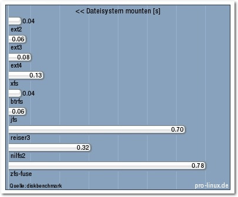
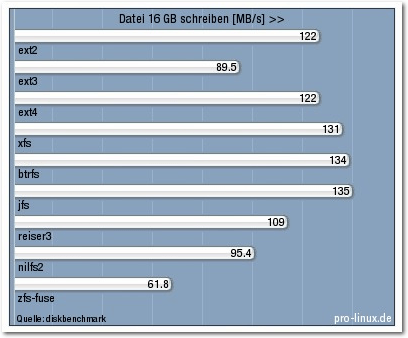

freiesMagazin August 2013
(ISSN 1867-7991)
Topthemen dieser Ausgabe
Firefox OSEin neues offenes System auf dem Markt für Smartphones ist Firefox OS. Das System setzt dabei größtenteils auf die neuesten Web-Technologien. Im April 2013 erschienen mit dem Geeksphone Keon und Peak die ersten Entwickler-Geräte mit Firefox OS. Im Herbst soll in Deutschland das Alcatel One Touch Fire mit dem Betriebssystem erscheinen. Der Artikel stellt das neue System vor. (weiterlesen)
XBMC
Schaut man auf die Homepage von XBMC, sieht man, dass es sich um einen leistungsfähigen Software-Mediaplayer handelt, der auf den derzeit gängigen Betriebssystemen (Linux, Mac OS X, Windows, iOS und Android) installiert werden kann. Die Grundfunktionalitäten umfassen das Abspielen von Medien wie Videos, Musik, Bilder, Podcasts sowohl von lokalen Datenträgern wie Festplatte, DVD oder CD als auch von entfernten Datenspeichern wie Netzwerkfreigabe, Cloud oder Webservices. Die Software ist frei und steht unter der GPL-Lizenz. (weiterlesen)
Costume Quest
Das Wort „Sommer“ scheint bei dem aktuellen Wetter (Ende Mai 2013) vielleicht etwas übertrieben, dennoch war das Halloween-Spiel Costume Quest Teil des Humble Double Fine Bundle, welches Anfang Mai veröffentlicht wurde. Der Artikel stellt das Spiel vor, was nicht zwingend an Kinder gerichtet ist, auch wenn die Thematik dies Nahe legen könnte. (weiterlesen)
Zum Index
Inhalt
Linux allgemeinFirefox OS
Linux-Dateisysteme im Vergleich
XBMC
Der Juli im Kernelrückblick
Anleitungen
Firefox-Erweiterungen mit dem Add-on-SDK erstellen – Teil VI
Software
Costume Quest – Halloween im Sommer
Community
Rezension: Think Like a Programmer
Rezension: Introducing Erlang
Rezension: Die elektronische Welt mit Raspberry Pi entdecken
Magazin
Editorial
Veranstaltungen
Vorschau
Konventionen
Impressum
Zum Index
Editorial
Feedback
Normalerweise veröffentlichen wir in jeder Ausgabe Leserbriefe, die per E-Mail bei uns eingegangen sind bzw. als Kommentare auf der Webseite hinterlassen wurden. Diesen Monat können wir leider aus einem einfachen Grund keine Leserbriefe präsentieren: Es gab keine. Sowohl für die Autoren als auch für die das freiesMagazin-Team ist es wichtig, dass von den Lesern Feedback kommt. Dies kann in Form von (konstruktiver) Kritik sein, was man verbessern könnte, aber auch Lob ist gerne gesehen. Vor allem die Autoren freuen sich darüber, wenn sie sehen, dass Ihr Artikel gerne gelesen wurde und jemanden dazu inspiriert hat, gegebenenfalls eine Software zu testen oder eine Anleitung nachzumachen. Für uns in der Redaktion ist das Feedback ebenso wichtig, denn nur so können wir uns verbessern. Wir sehen beispielsweise in den letzten Monaten bei den Leserzahlen einen leichten Rückgang bei den Downloads. Auch wenn man hiervon nur grob auf die Leserzahlen schließen kann, würden wir gerne wissen, wieso das Interesse schwindet. ÜberSoziale Netzwerke
Auf unserer Webseite präsentieren wir auf der rechten Seite Links auf diverse soziale Netzwerke, in denen freiesMagazin vertreten ist, darunter z. B. Google+, Facebook oder Twitter. Bis vor kurzem waren wir auch bei Diaspora und identi.ca. Die Benutzung bei Diaspora ist aber eingeschlafen und bei identi.ca wurde das Interface so umgestellt, dass es kaum noch benutzbar ist. Die Frage ist: Nutzen Sie diese beiden Dienste überhaupt, sodass wir Energie dafür aufwenden sollten, bei beiden wieder aktiv zu werden. Oder reichen die bisherigen drei sozialen Netzwerke völlig aus? Schreiben Sie uns!Layouter gesucht
In den letzten Monaten verließen uns einige Layouter, sodass wir nun etwas Verstärkung benötigen. Nach unserem Aufruf auf der Webseite [1] meldeten sich auch einige Interessierte und so können wir bereits zwei neue Layouter begrüßen. Dennoch würde dem Team noch eine weitere Person als Unterstützung helfen. Die Anforderung der Aufgabe können dem Link oben entnommen werden. Und nun wünschen wir viel Spaß beim Lesen der neuen Ausgabe. Ihre freiesMagazin-Redaktion Links[1] http://www.freiesmagazin.de/20130715-freiesmagazin-sucht-layouter
Das Editorial kommentieren
Zum Index
Firefox OS
von Sujeevan Vijayakumaran Ein neues offenes System auf dem Markt für Smartphones ist Firefox OS. Das System setzt dabei größtenteils auf die neuesten Web-Technologien. Im April 2013 erschienen mit dem Geeksphone Keon und Peak die ersten Entwickler-Geräte mit Firefox OS [1].Geschichtliches
Im Juli 2011 gab es erstmals die Ankündigung [2] von Firefox OS durch Andreas Gal von der Mozilla Foundation. Damals erfolgte die Ankündigung sowie die Entwicklung unter dem Projektnamen „Boot to Gecko“ (B2G). Das wichtigste Merkmal ist, dass es fast ausschließlich auf die neuesten Web-Technologien aufbauen soll. Die Entwicklung soll dabei von vornherein komplett offen stattfinden, sodass interessierte Personen stets die Entwicklung beobachten und auch etwas dazu beisteuern können. Dies ist etwas, was beispielsweise bei Android nicht möglich ist, da dies hinter verschlossenen Türen entwickelt und erst veröffentlicht wird, wenn eine neue Version fertig ist. Die Apps für Firefox OS sollen dabei ebenfalls mit Web-Technologien aufgebaut sein, sodass App-Entwickler mit HTML5, CSS3 und JavaScript Apps programmieren und damit auf Hardware-Elemente des Gerätes zugreifen können. Es wurde zudem betont, dass die Apps keinerlei Nachteile zu konventionellen Apps wie unter iOS oder Android haben sollen.Unter der Haube
Unter der Haube von Firefox OS befinden sich insgesamt drei wichtige Komponenten. Die Namen lauten Gonk, Gecko und Gaia.Gonk
Gonk ist simpel ausgedrückt die Linux-Distribution von Firefox OS, welches nur die wesentlichen Dienste enthält. Gonk besteht aus dem Linux-Kernel und einem Hardware Abstraction Layer (HAL [3]). Der Kernel sowie einige Bibliotheken sind dabei gängige Open-Source-Projekte, wie libusb und bluez. Einige Teile des Hardware Abstraction Layers stammen dabei aus dem Android-Projekt, darunter unter anderem GPS und die Kamera. Gonk ist darauf abgestimmt, dass Gecko darauf läuft. Gecko hat dabei direkten Zugang zum vollen Telefon-Stack sowie zum Framebuffer. Gonk nutzt den Kernel des „Android Open Source Project“ [4]. Auf der Wiki-Seite von Mozilla [5] schreibt Mozilla selbst, dass der Kernel im Vergleich zum Upstream-Linux-Kernel nur leicht modifiziert ist.Gecko
Die Laufzeitumgebung von Apps ist „Gecko“. Gecko implementiert die offenen Web-Standards für HTML, CSS und JavaScript. Es beinhaltet zudem einen Netzwerk- und Grafik-Stack sowie eine Layout-Engine und eine virtuelle Maschine zum Ausführen von JavaScript-Code.Gaia
Gaia ist der Name der Benutzer-Oberfläche von Firefox OS. Alles, was auf dem Bildschirm eines Gerätes dargestellt wird, ist Bestandteil von Gaia. Hierzu zählen der Lock-Screen, der Home-Screen sowie die vorinstallierten Anwendungen, darunter die Telefon-, Kamera- und Kalender-App. Gaia ist komplett in HTML, CSS und JavaScript geschrieben und läuft unter Gecko. Die Kommunikation mit dem Betriebssystem ist vollständig über offene Web-Programmierschnittstellen umgesetzt, welche auch auf anderen Betriebssystemen und Web-Browsern laufen könnten. Alle Apps von Drittanbietern laufen dabei neben Gaia.Bedienung und Look & Feel
Beim Start eines Gerätes mit Firefox OS erscheint nach einem Bootsplash mit einem Mozilla-Logo der App-Launcher. Der App-Launcher hat größere Ähnlichkeiten zu den Standard-App-Launchern von Android und iOS.Der App-Launcher von Firefox OS.
Insgesamt besteht das System standardmäßig aus vier Home-Screens. Nach dem Start erscheint einer der Home-Screens, welcher lediglich die Uhrzeit sowie das aktuelle Datum anzeigt. Am unteren Rand befinden sich vier kreisrunde App-Icons. Konkret sind dies die Telefon-, SMS-, Kontakte- und Browser-App. Die untere App-Leiste ist dabei permanent auf dreien der vier Home-Screens aktiv. Der Start-Home-Screen befindet sich auf der zweiten Position. Die ungefähre Position erkennt man zudem am oberen Rand, wo ein schmaler orangefarbener Balken eingeblendet ist. Auf den weiteren zwei Home-Screens befinden sich lediglich App-Launcher, welche zum Starten von Apps dienen. Eine Kamera-App ist genauso vorinstalliert wie eine E-Mail-, Musik- und Galerie-App.
Auch das Wechseln zwischen Apps ist möglich, wenn man die Home-Taste gedrückt hält.
Wenn man nach ganz links wischt, erscheint der letzte Home-Screen. Dort befinden sich außer einer Suche auch noch diverse Kategorien, mit denen man Apps starten kann, die keineswegs installiert werden müssen. In der Regel sind die dort enthaltenen Apps mobile Webseiten, beispielsweise von YouTube oder Twitter, die man auch über einen gängigen mobilen Browser auch auf anderen Plattformen aufrufen kann.
Eine Web-Suche lässt sich durchführen oder man kann mobile Webseiten besuchen.
Die graphische Oberfläche von Firefox OS besitzt zudem noch einen Bereich für Benachrichtigungen. Wie auch unter Android, erreicht man diese durch das Herunterziehen der Benachrichtigungsleiste. Der Benachrichtigungsbereich ist halbtransparent und zeigt die Benachrichtigungen untereinander an. Die Benachrichtigungen verschwinden in der Regel nach dem Klick auf diese oder durch die Benutzung des Buttons „Clear all“, welche alle vorhandenen Benachrichtigungen verbirgt. Im Benachrichtigungsbereich sitzen nicht nur die Benachrichtigungen, sondern auch eine Leiste mit Buttons, um diverse Hardware-Komponenten zu aktivieren oder deaktivieren, wie etwa dem WLAN, Mobilfunk, GPS, Bluetooth oder dem Flugzeugmodus. Zusätzlich gibt es dort noch einen Button, um in die Einstellungen zu gelangen.
Der Benachrichtigungsbereich.
Lock-Screen
Der Lock-Screen ist schlicht gehalten und sieht standardmäßig genauso aus wie der Home-Screen. Vom Lock-Screen aus kann man entweder direkt die Kamera-App öffnen oder alternativ das Gerät entsperren. In den Einstellungen kann man zusätzlich festlegen, ob Benachrichtigungen auf dem Lock-Screen dargestellt werden sollen.Der Lock-Screen.
Einstellungen
In den Einstellungen lassen sich viele gängige Dinge einstellen. Besonderheiten, die nicht von anderen mobilen Plattformen bekannt sind, findet man dort auch. Die wohl herausragendste Eigenschaft von Firefox OS ist wohl, dass man einzelnen Apps die Rechte zu bestimmten Hardware-Schnittstellen entziehen kann. Dies ist beispielsweise unter Android und iOS gar nicht möglich. Entweder installiert man sich auf diesen Plattformen die Apps mit den geforderten Rechten oder man installiert sie sich nicht. Bei Firefox OS gibt es daher eine größere und bessere Möglichkeit Apps ihre Rechte zu entziehen. Diverse Apps fragen beispielsweise nach der aktuellen geographischen Position. Standardmäßig fragt Firefox OS den Nutzer, ob man der App diese Rechte gibt. Dies kann man akzeptieren oder eben ablehnen. Je nach App kann man folglich nicht alle Funktionalitäten nutzen, wenn man spezielle Rechte wegnimmt. Eine Navigations-App macht ohne Zugriff auf die Geolokalisierung schließlich wenig Sinn.Apps
Unter Firefox OS gibt es zwei verschiedene Arten an Apps. Jeder Nutzer kann sich ziemlich einfach eine mobile Webseite als „App“ installieren. Letztendlich ist es eine einfache Verknüpfung auf eine mobile Webseite. Dazu reicht es, eine Webseite zu besuchen, etwa die mobile Seite von Twitter, und dann dort den Sternchen-Button zu drücken. Entweder kann man dann einen Bookmark im Browser hinzufügen oder man kann einen Launcher auf den Home-Screen hinzufügen. Wenn man nun den App-Launcher auf dem Home-Screen betätigt, startet der Firefox-Browser und zeigt die mobile Webseite an. Es fühlt sich dabei wie eine echte App an. Die zweite Art ist die Möglichkeit „echte“ Apps zu installieren. Dazu gibt es den „Marketplace“, aus dem man sich Apps installieren kann. Aktuell ist das Angebot von Apps übersichtlich. Da es sich um eine neue Plattform handelt, ist dies nachvollziehbar. Nennenswerte Apps sind Twitter, Wikipedia, Facebook oder auch Nokias Maps-App „HERE Maps“. Letztgenannte ist sogar vorinstalliert. Der Unterschied hierbei ist, dass die Apps über dem Marketplace „Packaged Apps“ sind. „Packaged Apps“ [6] sind Pakete, in denen die HTML-, CSS- und JavaScript-Dateien enthalten sind. Aktualisierungen der Apps werden über den Marketplace angeboten und verteilt. Packaged Apps werden vor der Veröffentlichung im Marketplace zuvor geprüft. Im Gegensatz zu den sogenannten Hosted Apps, die oben bereits beschrieben wurden, bieten Packaged Apps eine höhere Sicherheit. Zudem lassen sich hierbei die Berechtigungen der App konfigurieren, was bei Hosted Apps nicht möglich ist. Die Funktionalität einer Hosted App sowie einer Packaged App ist dabei nahezu gleich. Beim Look und Feel von den Twitter-Apps merkt man an sich keinen Unterschied. Das Gleiche gilt auch für die enthaltenen Funktionen.Eine Kalender-App ist vorinstalliert.
Firefox OS ausprobieren
Um Firefox OS auszuprobieren, gibt es verschiedene Möglichkeiten. Zuerst sei genannt, dass man sich eines der Entwickler-Geräte vom spanischen Hersteller Geeksphone [7] kaufen kann. Das günstigere und schwächere Geeksphone Keon [8] kostet 91€, während das größere und leistungsfähigere Geeksphone Peak 149€ kostet. Das Keon besitzt einen 1 GHz starken Qualcomm Snapdragon-Prozessor mit 512 MB RAM sowie einem 4 GB großen ROM. Das Display ist 3,5 Zoll groß. Das Peak [9] ist mit einem 1,2 GHz starken Dual-Core Qualcomm Snapdragon-S4-Prozessor ausgestattet und kommt ebenfalls mit 512 MB RAM sowie einem 4 GB großen ROM. Das Display ist bei diesem Modell 4,3 Zoll groß. Das Problem an diesen beiden Geräten ist allerdings, dass es kurz nach Verkaufsstart bereits ausverkauft war. Zum Zeitpunkt des Artikels (Anfang Juni 2013) waren beide Geräte weiterhin ausverkauft. Andere Hersteller planen ebenfalls die Herstellung von Firefox OS-Smartphones, darunter Alcatel und ZTE [10]. Auf der Computex gab Foxconn bekannt [11], dass sie ebenfalls Geräte mit Firefox OS auf den Markt bringen wollen, darunter auch ein Tablet. Wer allerdings nicht warten will oder kein Geld ausgeben möchte, um Firefox OS auszuprobieren, der kann auch eine ROM auf einem Android-Smartphone installieren. Einige ROMs findet man unter anderem im Forum von xda-developers [12]. Ich selbst habe dabei Firefox OS auf meinem Samsung Nexus S installiert und ausprobiert. Dafür gab es in einem Foren-Thread [13] eine funktionsfähige Anleitung.Firefox OS im Simulator.
Die letzte Methode, Firefox OS zu testen, ist wohl die einfachste. Zunächst muss ein installierter Firefox-Browser zur Verfügung stehen. Im Anschluss kann man sich den Firefox OS Simulator [14] als Plug-in installieren. Das Plug-in ist etwa 70 MB groß. Der Firefox OS Simulator ist schnell installiert und man bekommt einen guten Überblick über das System. Der Simulator läuft soweit sehr flüssig und lässt sich gut bedienen. Ein Nachteil ist, dass es zu einen relativ hohen Prozessor-Auslastung auf dem Rechner führt. Zudem ist die Kamera-App funktionslos, da ja keine Kamera vorhanden ist.
Fazit
Firefox OS ist ein weiteres mobiles System auf Linux-Basis, welches gut auf schwächeren Geräten läuft und zudem frei ist. Im Vergleich zu Android ist es deutlich freier, da man durch das Zurückziehen von Berechtigungen standardmäßig viel mehr Macht hat. Durch den Einsatz von Web-Technologien ist es für App-Entwickler einfach möglich, Apps zu programmieren oder zu portieren. Der Marktstart für Endanwender ist für Ende 2013 geplant. Hierbei erscheinen die Geräte zunächst in den Ländern Brasilien, Polen, Spanien und Venezuela [15]. Ab 2014 dürften dann auch Geräte mit Firefox OS auf dem deutschen Markt verfügbar sein. Die Mozilla Foundation steht bereits jetzt mit vielen großen Partner-Firmen [16] in Kontakt, welche die Entwicklung von Firefox OS unterstützen. Darunter die großen Telekommunikationsunternehmen wie Telefonica, die Deutsche Telekom oder Sprint. Das System macht schon jetzt einen guten Eindruck. Von der Bedienung her werden aber keine neuen Akzente gesetzt. Die möglichen Nachteile des Systems werden sich wohl nach und nach zeigen. Links[1] http://www.pro-linux.de/news/1/19708/firefox-os-geeksphone-ab-sofort-bestellbar.html
[2] https://groups.google.com/forum/?fromgroups=#!topic/mozilla.dev.platform/dmip1GpD5II[1-25-false]
[3] https://de.wikipedia.org/wiki/Hardwareabstraktionsschicht
[4] http://source.android.com/
[5] https://wiki.mozilla.org/B2G/Architecture
[6] https://developer.mozilla.org/en-US/docs/Web/Apps/Packaged_apps
[7] http://www.geeksphone.com/
[8] http://shop.geeksphone.com/en/phones/1-keon.html
[9] http://shop.geeksphone.com/en/phones/5-peak.html
[10] http://www.netzwelt.de/news/92870-alcatel-zte-erste-smartphones-mozilla-os-planung.html
[11] http://www.heise.de/open/meldung/Foxconn-und-Mozilla-bauen-Geraete-mit-Firefox-OS-1875291.html
[12] http://forum.xda-developers.com/
[13] http://forum.xda-developers.com/showthread.php?t=1814302
[14] https://addons.mozilla.org/de/firefox/addon/firefox-os-simulator/
[15] http://www.zdnet.de/88151357/firefox-os-startet-im-sommer-in-funf-landern/
[16] http://www.mozilla.org/de/firefox/partners/
| Autoreninformation |
| Sujeevan Vijayakumaran (Webseite) benutzt zwar seit einigen Jahren Android, findet die Entwicklung von Firefox OS allerdings ziemlich spannend. |
Diesen Artikel kommentieren
Zum Index
Linux-Dateisysteme im Vergleich
von Hans-Joachim Baader Die Dateisysteme ext3 und reiserfs haben ausgedient, die Zeit ist reif für btrfs. Das ist das Ergebnis des neuen Dateisystem-Benchmarks, der hier vorgestellt wird. Redaktioneller Hinweis: Der Artikel „Linux-Dateisysteme im Vergleich“ erschien erstmals bei Pro-Linux [1]. Im Artikel „Das Dateisystem ext4“ (siehe freiesMagazin 04/2009 [2]) wurde das damals gerade erst als stabil freigegebene Dateisystem den Dateisystemen ext3, xfs, jfs und reiser3 gegenübergestellt. Dabei erreichte es in mehreren Disziplinen die Spitzenposition und stellte sich insgesamt als klare Verbesserung gegenüber ext3 und zumindest ebenbürtig zu xfs heraus. Inzwischen hat sich einiges im Linux-Kernel getan. Der ganze Kernel, ext4 [3] und mit Einschränkungen auch ext3 wurden weiter optimiert. btrfs [4] und nilfs2 [5] (zuvor nilfs) betraten, neben anderen Dateisystemen, die eine untergeordnete Rolle spielen, neu die Bühne. Insbesondere die sich allmählich abzeichnende Einsatzreife von btrfs sollte Anlass für eine neue Runde von Benchmarks sein. Ursprünglich sollte auch Reiser4 mit getestet werden, das beim letzten Test nicht dabei war. Dazu kam es jedoch nicht, da das Dateisystem nicht mit dem aktuellen Debian-Kernel 3.2 zusammenarbeiten will. Reiser4 scheint ohnehin dem Untergang geweiht und wird offenbar kaum noch gepflegt. Stattdessen wurde das Dateisystem ZFS mit in den Test aufgenommen. Von den Funktionen her ist es das wohl leistungsfähigste freie Dateisystem und quasi das Vorbild von btrfs. Seine Implementierung in Linux lässt jedoch zu wünschen übrig, was hauptsächlich an der zur GPLv2 und damit zum Linux-Kernel inkompatiblen Lizenz liegt. Dennoch existieren zwei Implementierungen von ZFS für Linux. „ZFS on Linux“ [6] ist ein regulärer Dateisystem-Treiber im Kernel und wurde im April 2013 für alltagstauglich erklärt. Er kann jedoch wegen der Lizenz nicht gemeinsam mit dem Kernel ausgeliefert werden und muss somit vom Benutzer separat installiert werden. Die andere ist ein Modul, das mittels des FUSE-Treibers (Filesystem in User Space) als Benutzerprozess ausgeführt wird. Wegen Problemen beim Kompilieren konnte „ZFS on Linux“ dieses Mal nicht getestet werden. Dagegen wurde zfs.fuse mit getestet, obwohl zu erwarten ist, dass es deutlich langsamer ist als native Dateisysteme. Zum Test wurde das gleiche AMD Phenom-System wie beim letzten Mal verwendet, das inzwischen aber von vier auf acht GB RAM hochgerüstet und mit einer mehr als doppelt so schnellen Festplatte ausgestattet wurde. Daher sind die Ergebnisse nur untereinander, aber nicht mit den früheren Werten vergleichbar.Durchführung
Das Benchmarksystem war ein AMD Phenom (vier Kerne) mit 2,4 GHz und acht GB RAM. Als Kernel kam Linux 3.2 von Debian in der 64-Bit-Version zum Einsatz. Für den Test wurde ein logisches Volume von 100 GB Größe auf einer brandneuen Festplatte WDC WD30EFRX-68AX9N0 angelegt. Diese Festplatte könnte einen SATA-Link mit 6 Gbit/s nutzen, ein solcher stand jedoch nicht zur Verfügung. Aber auch die genutzten 3 Gbit/s lassen noch Luft nach oben bei der Übertragungsrate und stellten daher keine Einschränkung dar. Die maximale Geschwindigkeit der Platte liegt nach Herstellerangaben bei 145 MB/s und erreichte mit hdparm -tT 143 MB/s. Die äußeren Bereiche sind dabei wie bei Festplatten üblich deutlich schneller als die inneren, sodass im Mittel eher mit 130 MB/s zu rechnen ist. Die erhebliche Größe von 100 GB für die Testpartition kommt zum einen dadurch zustande, dass Dateien mit der doppelten Größe des Hauptspeichers benötigt werden, womit ca. 20 GB einschließlich des Dateisystem-Overheads das Minimum gewesen wären. Manche Dateisysteme wie nilfs2 besitzen jedoch einen erheblich größeren Overhead, zumindest kurzzeitig, und benötigen somit größere Partitionen. Es stellte sich heraus, dass selbst mit 100 GB die Benchmarks mit nilfs2 nicht ohne Probleme liefen. Zum Testen wurde wiederum Bonnie++ verwendet. Dabei wurden die Optionen anders als beim letzten Test sorgfältig ausgewählt, um ein möglichst aussagekräftiges Ergebnis zu erhalten. Folgende Optionen wurden eingesetzt:- -s 16384m:256k Größe der Dateien (doppelt so groß wie RAM) mit 256K Chunk Size. Letzteres stellt die Größe der Datenblöcke bei I/O-Aufrufen dar; der Standardwert wäre hier 8K.
- -n 128:1999:0:1 128K (131072) Dateien für den Dateierzeugungstest mit einer zufälligen Größe von 0 bis 1999 Bytes in einem einzelnen Verzeichnis. Mit dem Bestehen auf einem einzelnen Verzeichnis soll der Umgang der Dateisysteme mit großen Verzeichnissen getestet werden.
- -f Kein Test der zeichenorientierten Operationen, die keine Relevanz haben (spart viel Zeit).
| Benchmark-Ergebnisse | |||||||||
| ext2 | ext3 | ext4 | xfs | btrfs | jfs | reiser3 | nilfs2 | zfs-fuse | |
| Dateisystem 100 GB anlegen [s] | 3,75 | 21,47 | 2,31 | 0,94 | 0,04 | 1,37 | 5,07 | 0,10 | 1,42 |
| Dateisystem 100 GB mounten [s] | 0,04 | 0,06 | 0,08 | 0,13 | 0,04 | 0,06 | 0,70 | 0,32 | 0,78 |
| Datei 16 GB schreiben [MB/s] | 122 | 89,5 | 122 | 131 | 134 | 135 | 109 | 95,4 | 61,8 |
| Datei 16 GB lesen [MB/s] | 128 | 119 | 132 | 128 | 109 | 132 | 117 | 119 | 105 |
| Datei 16 GB löschen [sys s] | 0,00 | 0,92 | 0,00 | 0,00 | 1,81 | 0,00 | 0,00 | 7,61 | 0,46 |
| Datei 16 GB löschen [min Ges s] | 0,00 | 0,96 | 0,00 | 0,00 | 1,82 | 0,04 | 0,00 | 7,62 | 3,92 |
| Datei 16 GB löschen [max Ges s] | 0,12 | 1,28 | 0,28 | 0,07 | 12,47 | 0,18 | 3,66 | 13,86 | 4,30 |
| Seq. schreiben [MB/s] | 109,6 | 83,7 | 118,0 | 120,5 | 122,4 | 117,5 | 85,8 | 75,0 | 62,3 |
| Seq. lesen [MB/s] | 133,9 | 140,0 | 133,5 | 132,4 | 121,5 | 147,8 | 136,4 | 80,9 | 112,8 |
| Seeks [1/s] | 122 | 112 | 122 | 115 | 115 | 134 | 125 | 82 | 89 |
| Datei erzeugen [1/s] | 695 | 14516 | 14193 | 6086 | 13421 | 910 | 3831 | 606 | 4646 |
| Datei stat [1/s] | 221571 | 81665 | 87667 | 216153 | 115771 | 220937 | 547 | 235472 | 155 |
| Datei löschen [1/s] | 1612 | 11709 | 14404 | 13224 | 17810 | 191 | 466 | 1210 | 10203 |
| Tar extrahieren [s] | 56,46 | 94,37 | 41,56 | 60,24 | 46,32 | 127,74 | 100,56 | 82,57 | 194,12 |
| Cpio erzeugen [s] | 27,88 | 44,12 | 22,08 | 20,83 | 22,20 | 24,35 | 49,17 | 72,05 | 543,78 |
| Verzeichnisbaum löschen [s] | 5,09 | 16,37 | 7,84 | 23,40 | 8,63 | 83,09 | 7,98 | 3,17 | 170,71 |
Auswertung
Beim Anlegen von Dateisystemen heißt der klare Sieger btrfs. Die Zeit, die das System hierfür benötigt, ist gar nicht wahrnehmbar. Interessante und unerwartete Verschiebungen gab es dagegen bei den anderen Dateisystemen. Während ext4 und überraschenderweise auch ext2 recht schnell sind, benötigt ext3, das schon traditionell nicht schnell war, extrem viel Zeit. Da die Messung nur einmal durchgeführt wurde, erschien der Wert zunächst wie ein Ausreißer; eine Wiederholung bestätigte die Zahl jedoch. In Zukunft wird der Benchmark auch diese Operation mehrmals durchführen, um genauere Werte zu erhalten. Auffallend sind ferner die hohe Geschwindigkeit von nilfs2 und das Abfallen von reiser3. War reiser3 im früheren Test noch ein Mehrfaches schneller als ext2, ext3 und ext4, so ist es jetzt ins Hintertreffen geraten. Ob dies nur an dem größeren Dateisystem liegt, muss offen bleiben. Generell wurde nicht gemessen, ob die Zeit zum Anlegen eines Dateisystems proportional zur Dateisystemgröße ist, oder ob sie darüber oder darunter liegt.Dateisystem anlegen.
Das Mounten erforderte bei allen Dateisystemen nur Sekundenbruchteile. Zwar gab es Unterschiede um Faktor 20 zwischen den schnellsten (ext2 und btrfs) und dem langsamsten (zfs-fuse), doch bedeutsam ist das nicht. 
Dateisystem mounten.
Das Schreiben einer großen Datei mittels dd soll einfach nur die maximale sequentielle Geschwindigkeit ermitteln. Jedes Dateisystem hat hier einen gewissen Overhead, da es Verwaltungsstrukturen anlegen muss, während neue Blöcke zur Datei hinzukommen. Sieger wurde hier knapp jfs. Die Dateisysteme ext4, xfs, btrfs und jfs waren trotz des Journal-Overheads schneller als ext2. Enttäuschend schnitten ext3 und reiserfs ab. Ein Grund hierfür könnte die barrier-Option sein, die bei beiden explizit eingeschaltet wurde, da Datensicherheit normalerweise vor Geschwindigkeit geht. Während ext4 inzwischen darauf optimiert wurde, auch mit Barriers schnell zu laufen, ist dies bei ext3 bisher unterblieben oder war nicht möglich. 
16 GB schreiben.
Das Lesen einer großen Datei mittels dd sollte eigentlich schneller sein als das Schreiben, da keine Daten auf der Platte zu ändern sind. Tatsächlich war das nicht immer der Fall. Am schnellsten waren ext4 und jfs, gefolgt von ext2 und xfs. Auch hier konnten ext3 und reiserfs nicht mithalten, wenn sie auch besser dastehen. Hier enttäuschte btrfs, das nur knapp vor zfs-fuse Vorletzter wurde.
16 GB lesen.
Beim Löschen der zuvor erzeugten großen Datei wurde sowohl die Systemzeit als auch minimale und maximale Gesamtzeit betrachtet. Dabei war die minimale Gesamtzeit fast identisch mit der (minimalen) Systemzeit, außer bei zfs-fuse. Die maximale Gesamtzeit konnte deutlich höher liegen. Einen extremen Ausreißer gab es bei btrfs, das aber auch generell beim Löschen nach zfs-fuse das langsamste System war. Die Mehrheit der Dateisysteme erledigte die Aufgabe in rund 0,0 Sekunden, aber auch hier war ext3 etwas schlechter.
16GB löschen.
Das sequentielle Schreiben, gemessen von Bonnie++, ergab erwartungsgemäß ähnliche Werte wie dd, nur etwas geringer. Hier konnte btrfs das beste Ergebnis vorweisen.
Sequenz schreiben.
Das sequentielle Lesen, gemessen von Bonnie++, ergab genauso erwartungsgemäß ähnliche Werte wie dd. Hier lagen sie allerdings etwas höher. btrfs konnte davon nicht profitieren und blieb im Mittelmaß stecken. Beeindruckend war der Wert des Siegers dieser Disziplin jfs, der die Festplatte nahezu zu 100% ausreizte.
Sequenz lesen.
Die Anzahl der Suchvorgänge (Seeks) pro Sekunde wird durch die Latenzzeit der Festplatte beim Positionieren des Lesekopfes begrenzt, die mit 8 ms angegeben ist. Auch in dieser Disziplin siegte jfs mit einem Wert, der wohl nahe am maximal Möglichen lag. btrfs war auch hier nur mittelmäßig.
Seeks [1/s].
Eine andere Art von Suche stellt das Auslesen von Dateiinformationen (stat) dar. Manche Dateisysteme sind offenbar extrem darauf optimiert, und das ist auch sinnvoll, da diese Operation sehr häufig ist. Hilfreich ist es sicher, wenn diese Informationen auf der Festplatte nahe beieinander liegen, da der Zugriff dann weniger Kopfbewegungen erfordert. Auch ein großer Cache hilft viel. Ein schlechter Wert in dieser Disziplin macht das Dateisystem generell langsam, ganz extrem bei zfs-fuse. Doch auch reiserfs schnitt extrem schlecht ab, sodass man den Wert erst gar nicht glauben will. Doch er stimmt, wie eine Überprüfung ergab. Die Messung wurde überraschend von nilfs2 gewonnen, gefolgt von ext2, jfs und xfs. btrfs war wiederum nur mittelmäßig, aber immer noch deutlich vor ext3 und ext4.
Datei stat.
Das Löschen von Dateien unterschiedlicher Größe wird von btrfs am besten beherrscht, gefolgt in deutlichem Abstand von ext4, xfs und ext3. zfs-fuse folgte überraschend nur knapp dahinter, während die anderen Dateisysteme offenbar sehr viel Overhead aufweisen. Das sonst so schnelle jfs wurde hier gar Letzter, eine Möglichkeit zur Verbesserung dieser Leistung ist nicht bekannt.
Datei löschen.
Eine komplexe, etwas praxisnähere Operation stellt das Extrahieren eines Tar-Archivs dar. Am besten bewältigt wurde sie von ext4, gefolgt von btrfs. Auch xfs lag noch gut im Rennen. Leider versagte jfs auch hier kläglich und wurde nur Vorletzter vor zfs-fuse. ext3 und reiserfs waren auch in dieser Disziplin schwach.
Tar extrahieren.
Das Gegenstück zum Extrahieren stellt das Anlegen eines Archivs dar, das zur Abwechslung mit cpio statt tar durchgeführt wurde. Optisch liegen die Ergebnisse nahe beieinander, was aber nur durch die extreme Langsamkeit von zfs-fuse bedingt ist. Sieger wurde xfs, dicht gefolgt von btrfs und ext4 sowie jfs. Sie waren rund doppelt so schnell wie ext3 und reiserfs, deren Ergebnisse somit konsistent blieben.
Cpio erzeugen.
Das Löschen des extrahierten Verzeichnisbaumes sollte keine großen Überraschungen bergen und doch gab es sie. Sieger wurde nilfs2, dahinter folgten ext4, reiserfs (das war die zweite Überraschung) und btrfs. xfs schnitt deutlich schlechter ab als erwartet, mit einer fast dreimal so langen Zeit wie btrfs. Sogar ext3 war mit nur der doppelten Zeit schneller. jfs setzte seine Lösch-Schwäche fort.
Verzeichnisbaum löschen.
Bewertung
Zu den einzelnen Dateisystemen lässt sich in Kurzfassung Folgendes sagen:- ext2 ist nach wie vor gut in Schuss und schnell. Auch für maximale Interoperabilität mit anderen Betriebssystemen ist es von Nutzen. Aufgrund des fehlenden Journals leistet es hauptsächlich bei kleineren Dateisystemen, die sich nicht oft ändern, gute Dienste, z. B. für /boot.
- ext3 scheint etwas vernachlässigt, da seine Leistung deutlich hinter ext4 und ext2 zurückbleibt. Vor vier Jahren lag es noch fast gleichauf, allerdings war damals die Barrier-Option noch nicht gesetzt.
- ext4 ist in vielen Linux-Distributionen das Standard-Dateisystem, und das zu Recht. Zwar beruht es zum Teil auf der über 20 Jahre alten Technologie von ext2 und kann nur in wenigen Disziplinen die Spitzenposition erobern, erreicht aber überall gute Werte.
- xfs wurde ebenso wie ext4 in vielen Punkten verbessert und liegt mit den richtigen Mount-Optionen überall im oberen Bereich.
- btrfs zeigt ausgerechnet in der Lesegeschwindigkeit eine Schwäche, ist ansonsten aber klarer Gesamtsieger, auch aufgrund der überlegenen Features, die ansonsten höchstens noch von zfs aufgeboten werden. Es bleibt noch eine gewisse Skepsis bezüglich des Verhaltens in Problemsituationen und dem Dateisystem-Check [7], doch ist es nur noch eine Frage der Zeit, bis diese ausgeräumt sind.
- Zwiespältig bleibt jfs. Während es in mehreren Messungen klarer Sieger war, war es beim Extrahieren von Archiven und insbesondere beim Löschen schwach. Die hauptsächliche Anwendung dürfte in Umgebungen liegen, die mit verschiedenen IBM-Systemen kompatibel sein müssen.
- Reiser3 präsentierte sich als schlecht gewartet und in vielen Punkten ziemlich langsam. Auch bei diesem System war im Gegensatz zum letzten Test die Barrier-Option gesetzt, womit es wohl schlecht klar kommt. Reiser3 sollte nicht mehr verwendet werden.
- nilfs2 ist ein Log-Dateisystem, dessen herausragende Eigenschaft ist, dass es kontinuierlich Checkpoints anlegt, die sich in Schnappschüsse umwandeln lassen. Was nach ziemlich viel Overhead klingt, läuft in der Praxis erstaunlich schnell – meistens. Der immense Speicherbedarf auf der Festplatte scheint noch nicht vollständig unter Kontrolle, was vermuten lässt, dass nilfs2 noch nicht produktionsreif ist. Zudem sind einige Features wie atime, erweiterte Attribute, POSIX-ACLs, Quotas, fsck und Defragmentierung noch nicht implementiert.
- zfs-fuse war so langsam, wie man aufgrund der Implementierung als Dateisystem im User-Space erwarten musste. Dennoch ist es nicht unbenutzbar und durchaus eine Lösung für alle, die es benötigen.
Fazit
Ohne Umschweife muss man feststellen: Die Veteranen ext3 und reiserfs haben ausgedient. Sie sollten nicht mehr verwendet werden, auch wenn sie bislang sehr zuverlässig sind. In der Leistung können sie nicht mehr mithalten. Die Zukunft gehört btrfs, zusammen mit ext4 und xfs. Letztere beruhen zwar in Teilen auf über 20 Jahre alten Konzepten, doch dürfte vieles davon schon ersetzt und modernisiert worden sein. Die aktive Verbesserung hat dazu geführt, dass sie in der Leistung immer noch leicht mithalten können und auf absehbare Zeit keine größeren Einschränkungen aufweisen. Btrfs dagegen kann als Sieger dieses Tests gelten. Die zahlreichen Funktionen, darunter die sicherlich für viele ungewohnten Subvolumes, Schnappschüsse, Volume Management, RAID und Kompression, lassen sogar zfs vergessen. Dennoch sollte man auch zfs weiter im Auge behalten.Ausblick
Bei den Ergebnissen ist zu berücksichtigen, dass der verwendete Kernel bereits recht alt ist. Sobald ein aktuellerer Kernel zur Verfügung steht, könnte der Benchmark erneut durchgeführt werden und auch Erfahrungen aus dem aktuellen Benchmark mit einbeziehen. Es ist zu hoffen, dass dann auch „ZFS on Linux“ getestet werden kann. Aufgrund der Erfahrungen in diesem Test sind folgende Verbesserungen für das Programm „diskbenchmark“ denkbar:- Die Anzahl der Durchläufe sollte erhöht werden, insbesondere für die Operationen, die bisher nur jeweils einmal gemessen wurden. Das erhöht die Genauigkeit und verringert die Wahrscheinlichkeit von Zufallsschwankungen.
- Das Skript sollte darüber hinaus so erweitert werden, dass es die Daten in einem maschinenlesbaren Format ausgibt – oder gleich die Auswertung vornehmen und in verschiedenen, direkt nutzbaren Formaten, in Dateien schreiben. Dies würde künftige Tests sehr vereinfachen.
[1] http://www.pro-linux.de/artikel/2/1634/linux-dateisysteme-im-vergleich.html
[2] http://www.freiesmagazin.de/freiesMagazin-2009-04
[3] http://www.bullopensource.org/ext4/index.html
[4] http://btrfs.wiki.kernel.org/
[5] http://www.nilfs.org/
[6] http://zfsonlinux.org/
[7] https://btrfs.wiki.kernel.org/index.php/FAQ#When_will_Btrfs_have_a_fsck_like_tool.3F
[8] http://sharevm.wordpress.com/2008/12/16/435/
[9] http://www.pro-linux.de/work/tuning/fs-tuning.html
| Autoreninformation |
| Hans-Joachim Baader (Webseite) befasst sich seit 1993 mit Linux. 1994 schloss er erfolgreich sein Informatikstudium ab, machte die Softwareentwicklung zum Beruf und ist einer der Betreiber von Pro-Linux.de. |
Diesen Artikel kommentieren
Zum Index
XBMC
von Werner Ziegelwanger Schaut man auf die Homepage von XBMC [1], sieht man, dass es sich um einen leistungsfähigen Software-Mediaplayer handelt, der auf den derzeit gängigen Betriebssystemen (Linux, Mac OS X, Windows, iOS und Android) installiert werden kann. Die Grundfunktionalitäten umfassen das Abspielen von Medien wie Videos, Musik, Bilder, Podcasts sowohl von lokalen Datenträgern wie Festplatte, DVD oder CD als auch von entfernten Datenspeichern wie Netzwerkfreigabe, Cloud oder Webservices. Die Software ist frei und steht unter der GPL-Lizenz.XBMC-Hauptmenü mit Standard-Skin.
Geschichte
Die Geschichte von XBMC beginnt im Jahre 2002. Zwei Programmierer stellten eine Mediencenter-Software unter der GPL-Lizenz (GNU General Public License [2]) online, da sie die offenen FFmpeg- und Xvid-Codec-Lizenzen für eigene Mediencenter-Software verwendeten. Damals stand die Software noch unter dem Namen „Xbox Media Player“. Im Laufe der Zeit wurde die Community größer und die Entwicklung machte größere Fortschritte. Im Jahre 2010 wurde die Unterstützung für die XBox-Plattform eingestellt und die Software in „XBox Medien Center“ umbenannt. Weitere Meilensteine waren die im Jahr 2011 erschienene Version für Apple iOS und im Jahr darauf eine eigene Version für den Raspberry Pi.Abgrenzung
Im Gegensatz zu anderen Medien-Centern bietet XBMC die Möglichkeit, Medien unterschiedlichster Quellen in einem System zu vereinen und diese durch eine durchdachte Bibliotheksfunktion zu organisieren. Dafür bietet XBMC die Möglichkeit, Metainformationen aus dem Internet zu laden. So werden anhand des Filmtitels die passenden Beschreibungen, Darstellerlisten und Bilder (Filmplakate) geladen oder von Musikstücken die dazu passenden Coverbilder. Als Quelle dienen dazu im Internet frei erreichbare Mediatheken und Videoportale. Ein weiterer großer Mehrwert ist die frei wählbare Steuerung. So gut wie alle Eingabekanäle können genutzt werden, so unter anderem Maus, Tastatur, Webinterface, Fernbedienungen und WLAN-fähige mobile Geräte. Außerdem ist das Design der Software völlig änderbar, weshalb es unzählige, fertig herunterladbare Skins gibt.Unterstützte Formate
Das Qualitätskriterium bei Medienspielern ist fast ausschließlich der Umgang mit den Medienformaten. Sobald eine Datei nicht abgespielt oder geöffnet werden kann, ist das ein Defizit. Deshalb wurde bei XBMC Wert darauf gelegt, möglichst alle erdenklichen Formate abspielen zu können. Ein Vorteil gegenüber anderen Medienspielern ist die Community, welche rasch auch das Abspielen neuer Formate gewährleistet. Eine Liste aller abspielbaren Formate [3]:- Physische Medien:
- CDs, DVDs, DVD-Video, Video CDs (inkl. VCD/SVCD/XVCD), Audio-CD (CDDA), Blu Rays (unverschlüsselt), USB Flash Drives, und Festplatten
- Netzwerkprotokolle:
- UPnP, NFS, SMB/SAMBA/CIFS, XBMSP, DAAP, HTTP, HTTPS, FTP, RTSP (RTSPU, RTSPT), MMS (MMSU, MMST), RTMP, Podcasting, TCP, UDP, SFTP, RTP
- Medien-Container:
- AVI, MPEG, WMV, ASF, FLV, Matroska, QuickTime, MP4, M4A, AAC, NUT, Ogg, OGM, RealMedia RAM/RM/RV/RA/RMVB, 3gp, VIVO, PVA, NUV, NSV, NSA, FLI, FLC, und DVR-MS (beta support)
- Videoformate:
- MPEG-1, MPEG-2, H.263, MPEG-4 SP and ASP, MPEG-4 AVC (H.264), HuffYUV, Indeo, MJPEG, RealVideo, RMVB, Sorenson, WMV, Cinepak
- Audioformate:
- MIDI, AIFF, WAV/WAVE, MP2, MP3, AAC, AACplus, AC3, DTS, ALAC, AMR, FLAC, Monkey's Audio (APE), RealAudio, SHN, WavPack, MPC/Musepack/Mpeg+, Speex, Vorbis und WMA.
- Digitalbild-Formate:
- RAW-Formate, BMP, PNG, JPEG, GIF, TIFF, MNG, ICO, PCX und Targa/TGA
- Untertitelformate:
- AQTitle, ASS/SSA, CC, JACOsub, MicroDVD, MPsub, OGM, PJS, RT, SMI, SRT, SUB, VOBsub, Vplayer
- Metadaten:
- APEv1, APEv2, ID3 (ID3v1 and ID3v2), ID666, Exif und IPTC (mit GeoTagging) für Bildformate
Installation
Wie bereits erwähnt, gibt es XBMC für die unterschiedlichsten Plattformen, somit lässt sich dieser Punkt nicht so einfach als Schritt-für-Schritt-Anleitung schreiben. Tatsächlich ist es so, dass XBMC auf unterschiedlichste Art installiert werden kann. Auf Linux-Systemen ist dies am einfachsten über die jeweilige Paketverwaltung, bei der man einfach das Paket xbmc installiert. Wer die aktuellste Version benötigt oder XBMC auf einem anderen Betriebssystem wie Windows oder Mac OS X installieren möchte, bekommt das Programm von der XBMC-Homepage [1]. Mit derzeit rund 50 MB (abhängig vom Betriebssystem) ist das Programm schnell geladen. Zusätzlich zu den normalen Programmdownloads gibt es auch spezielle Downloads wie Raspbmc, XBMCbuntu oder ähnliches. Wie die Namen schon andeuten, sind das spezielle Images für den Raspberry Pi oder Ubuntu, wo man ein fertig konfiguriertes Betriebssystem mit XBMC bekommt. Der Download ist zwar bedeutend größer, jedoch funktioniert das System üblicherweise ohne weitere Konfiguration. Für den Raspberry Pi installiert man das System auf eine SD-Karte, XBMCbuntu kann man zum Beispiel auf einen bootfähigen USB-Stick kopieren. Alle weiteren Informationen dazu sind auf der Homepage erklärt, und so sollte jeder die für ihn beste Installationsmöglichkeit finden.Namenskonvention
Nach der Installation sollte man sich vor dem Hinzufügen von Medien über die Organisation seiner Medienbibliothek Gedanken machen. XBMC erlaubt es bei bestehender Internetverbindung, dass Metainformationen über die Medien abhängig vom Dateinamen zu laden. Bei falscher oder schlechter Benennung der Dateien können so Probleme entstehen und im schlimmsten Fall werden falsche Medieninformationen angezeigt. Um ein derartiges Chaos zu vermeiden, sollte man sich an die Namenskonventionen von XBMC halten oder den automatischen Abgleich der Metainformationen abschalten.Filme
Bei Filmen sollte zuerst der Titel des Films stehen und danach in Klammern das Jahr, in dem er erschienen ist. Wenn man sich nicht sicher ist, so kann man im Internet dazu bei Filmdatenbanken nachsehen (zum Beispiel bei IMDb [4]). Beispiel: Hat man auf einer Festplatte den neuesten King-Kong-Film King Kong.mp4, so würde XBMC automatisch vermutlich die Darstellerliste und Filmplakat des ersten Films von 1933 laden. Um das zu vermeiden, sollte man den Dateinamen auf King Kong (2005).mp4 ändern.Die Filminformationen wurden korrekt geladen.
TV-Serien
Bei TV-Serien verhält es sich etwas anders. Hier muss man bei jeder Datei neben dem Namen der Serie auch die Nummer der Staffel und Episode angeben. Auch hier helfen Online-Filmdatenbanken. Beispiel: Für die erste Episode aus Staffel 3 der TV-Serie Futurama müsste man die Datei korrekterweise also Futurama.s03.e1.mp4 benennen.Musik
Bei Musik gibt es diese Metainformationen bereits seit Jahren und diese kennt normalerweise auch jeder. Ändern kann man diese Metainformationen, die bei MP3-Dateien in den sogenannten ID3-Tags gespeichert sind, mit so gut wie jedem üblichen Software-Musikplayer wie iTunes, WinAmp, EasyTAG oder dergleichen.Medienbibliothek übertragen/zugänglich machen
Die Art und Weise wie man seine Medien XBMC freigibt, ist genau so vielfältig wie die Installation an sich. Man kann folgende Methoden unterscheiden:Daten auf das XBMC System kopieren
Im einfachsten Fall kopiert man einfach alle Dateien auf das System, auf dem XBMC läuft. Am einfachsten geht das via SFTP, zum Beispiel mit dem Programm Filezilla [5]. Das ist jedoch die langsamste Methode und nicht ratsam, denn dafür benötigt man viel Speicherplatz (man speichert alles doppelt). Ein XBMC auf einem Raspberry Pi zum Beispiel hat bestenfalls ein paar GB Speicher frei, und zwar auf einer SD-Karte mit begrenzter Anzahl an Schreibvorgängen. Außerdem müsste man die Daten immer abgleichen oder aber das XBMC-System als Archiv verwenden. Dafür sollte man ein Backup einrichten usw. – mehr Arbeit als Vergnügen!Externe Speicher
Eine andere Möglichkeit ist, eine externe Festplatte mit den Mediendaten zu verwenden. Diese kann man einfach am XBMC-System anstecken. Sollte man neue Daten einspielen wollen, kann man die Festplatte schnell an anderen Geräten anstecken.Netzwerkfreigaben
Die eleganteste Möglichkeit ist die einer Netzwerkfreigabe. Im besten Fall liegen die Medien auf einem Fileserver oder NAS, das selbstständig Sicherungen macht und speziell dafür eingerichtet ist. So kann man in seinem Heimnetzwerk alle Daten an einem zentralen Ort speichern. XBMC kann standardmäßig auf Samba-Freigaben zugreifen.Netzwerk-Quelle auswählen (hier: SMB).
Datenquellen registrieren
Nachdem geklärt ist, wie man die Daten XBMC zugänglich macht, müssen diese auch noch im XBMC-Interface hinzugefügt werden. XBMC teilt seine Medien in Filme, Videos, Musik und Bilder. Zu jedem dieser Menüpunkte kann man Datenquellen hinzufügen. Im Beispiel einer Netzwerkfreigabe für Filme geht das so:- Zuerst wählt man das Menü „Videos hinzufügen“ aus.
- Im darauffolgenden Dialog kann man den Namen der Quelle einstellen und auch den Pfad („Suchen“). XBMC bietet hier sowohl lokale als auch externe Pfade an. Für eine Samba-Freigabe wählen wir hier „smb“.
- Nun muss man noch IP-Adresse und Verzeichnis angeben (eventuell auch Benutzername und Passwort).
- Zuletzt wählt man noch die Art der Datei aus. Für Filme sollte man hier „Movies“ nehmen. Als Metadaten-Server wählt man am besten „The Internet Movie Database (imdb)“ aus – oder gar nichts, wenn man keine Metainformationen braucht.
Funktionen
Neben den bereits genannten Funktionen des Abrufs und der Anzeige von Metadaten und der Organisation der Medien von unterschiedlichsten Quellen bietet XBMC noch weitere interessante Funktionen.Wetter
Eine nette Funktion ist über das Hauptmenü zu finden. Über die Wetterfunktion kann man sich aus frei verfügbaren Quellen Wettervorhersagen für den angegebenen Ort für die nächsten Tage anzeigen lassen.Die Wetterfunktion.
Diashow
Mit dieser Funktion kann man unterschiedliche Medien miteinander verbinden. so kann man z. B. eine Diashow aus den Bildern erstellen und dafür Musik aus seiner Playlist verwenden.Playback
Neben dem Abspielen einzelner Filme lassen sich auch mehrere hintereinander abspielen. Das ist vor allem bei Serien sinnvoll.Skins
XBMC ist vielseitig. Deshalb lässt sich auch der komplette Skin ändern. Im Einstellungsmenü finden sich dazu bereits einige fertige. So lässt sich die Oberfläche z. B. so ändern, dass XBMC so aussieht wie das Apple-TV-Menü.Film-Detailseite im Default-Skin.
Add-ons
Die Standardfunktionen sind noch nicht genug. Über die Schaltfläche „Add-on“ kann man sich zu den Top-Menüpunkten (Filme, Videos, Musik und Bilder) jeweils unterschiedlichste Add-ons laden. Bei Videos sind das Mediatheken (MyVideo, Youtube, ZDF, GameStar TV, …) oder auch andere freie Videoquellen, zum Beispiel alle South-Park-Folgen. Bei Musik gibt es Online-Streams bekannter und auch unbekannter Radiosender der ganzen Welt. Diese kann man sich nach geographischer Nähe anzeigen lassen, aber auch nach Stilrichtung usw. … Andere mögliche Musikquellen sind Podcasts. Wie man sieht, gibt es kaum Grenzen und die Zahl der Add-ons wird immer größer.Bedienung
Handelsübliche Mediencenter werden von einer Fernbedienung (üblicherweise Infrarot) bedient. XBMC kann man mit so gut wie jeder denkbaren Eingabemöglichkeit bedienen. Das sind normalerweise Maus und Tastatur am Gerät. Verwendet man einen Raspberry Pi, dann hat man üblicherweise keine Maus und Tastatur angesteckt. Eine viel intuitivere Möglichkeit ist die einer Fernbedienung. Manche Fernseher unterstützen bereits den CEC-Standard [6] und so kann man XBMC direkt über die Fernsehtastatur steuern. Eine Möglichkeit, die unabhängig vom TV Gerät funktioniert, ist die Verwendung eines Smartphones als Fernbedienung. Die offizielle XBMC Remote App gibt es für das iPhone oder iPad [7] oder für Android-Geräte [8]. Die offizielle App ist gratis. Wenn das Smartphone oder Tablet im selben Netzwerk (WLAN) hängt, kann man damit das Mediencenter sogar über größere Entfernung steuern. Ein Webinterface ermöglicht sogar die Steuerung über das Internet.Airplay
Ein Service von Apple-Geräten ist die Airplay-Funktion. Dabei können Medien auf externen Geräten abgespielt werden. Die Idee dahinter war, dass Medien vom iPhone oder anderen mobilen Geräten am Apple TV abgespielt werden können. Das ist dank der Airplay Funktion von XBMC auch ohne Apple TV auf allen Fernsehgeräten möglich. Die einzige Voraussetzung hierfür ist, dass das XBMC-System über das Heimnetzwerk erreichbar ist.Streaming
Es geht aber auch anders herum! Wird bei Airplay noch das Medium am Fernseher abgespielt, so kann man durch Streaming die Medien von XBMC auf entfernten Geräten abspielen. Dadurch kann man sich zum Beispiel Filme auch am Tablet-Computer, Smartphone oder PC anschauen. Die einzige Voraussetzung ist, dass das Gerät das UPnP-Protokoll [9] unterstützt. Standardmäßig ist UPnP bei XBMC deaktiviert, dieses kann man jedoch im Systemmenü ändern (einfach alle drei Punkte bei UPnP aktivierten). Achtung: Am Router muss UPnP nicht aktiviert sein, deshalb sollte es dort auch ausgeschaltet bleiben. Alle weiteren Schritte müssen am Abspielgerät getroffen werden. Informationen diesbezüglich sollte man für das individuelle Gerät finden. Bei Android kann man zum Beispiel BubbleUPnP als UPnP-Programm und VLC zum Abspielen der Medien installieren und konfigurieren. XBMC unterstützt sogar beides gleichzeitig. So kann man am TV-Gerät einen Film ansehen, während jemand anders am Handy Musik über das XBMC hört!Live-TV
XBMC unterstützt auch das Abspielen von Online-TV-Sendern. Dieses Angebot wird immer größer (vor allem in den USA). Die Konfiguration von Live-TV ist noch relativ kompliziert und wird hier nicht näher beschrieben. Es sei jedoch gesagt, dass zu diesem Zweck ein zusätzliches Programmpaket (XBMCHub) über den Paketmanager installiert werden muss.Fazit
XBMC kann alles – so kann man diesen Artikel kurz zusammenfassen. Die Software ist dermaßen mächtig, dass sie keine Wünsche offen lässt. Die Community ist stark und liefert immer wieder Verbesserungen und neue Features nach. Im Gegensatz zu Hardware-Medien-Centern ist XBMC voraus – einzig die Hardware kann Einschränkungen bedeuten. Auf einem modernen System jedoch ist XBMC unschlagbar vielseitig. Anpassungsfähig ist XBMC, da es auf den unterschiedlichster Hardware installiert werden kann. Vom Raspberry Pi Minicomputer bis zu den neuesten PCs. XBMC macht aus dem alten Laptop vom Dachboden ein Mediencenter. Bei älteren Geräten besteht die Gefahr, dass HD-Videos nicht flüssig dekodiert werden können. Auf circa fünf Jahre alten Geräten läuft XBMC aber üblicherweise schnell und ist enorm leistungsfähig.Alternativen
Neben XBMC gibt es natürlich auch andere Medien-Center-Software. Einige der bekannteren Programme sollen hier kurz erwähnt werden: OpenElec [10] ist nicht wirklich eine Alternative, da es eigentlich nur eine eigene Linux-Distribution ist, welche so angepasst ist, dass XBMC darauf fertig konfiguriert läuft. Plex [11] als Alternative anzugeben ist auch etwas schwierig, da es 2008 aus dem Source Code von XBMC abgeleitet wurde und somit auch dessen Kern beinhaltet. MediaPortal [12] ist ebenfalls aus dem Source Code von XBMC heraus entstanden, aber im Unterschied zu Plex wurde dieser Code bereits vollständig ersetzt. Vom Interface sind kaum noch Gemeinsamkeiten zu erkennen – das liegt vor allem daran, dass MediaPortal sein Interface über DirectX darstellt. Das ist auch der Grund, warum dieses Mediacenter nur unter Windows läuft. Das Windows Media Center [13] ist das älteste hier genannte Software-Mediencenter und wurde bereits 2001 veröffentlicht. Es überrascht nicht, dass die Software nur unter Windows läuft. Links[1] http://xbmc.org
[2] http://www.gnu.org/licenses/
[3] https://de.wikipedia.org/wiki/XBMC_Media_Center
[4] http://imdb.com
[5] https://filezilla-project.org/
[6] http://wiki.xbmc.org/index.php?title=CEC
[7] https://itunes.apple.com/de/app/official-xbmc-remote/id520480364?mt=8
[8] https://play.google.com/store/apps/details?id=org.xbmc.android.remote&hl=de
[9] https://de.wikipedia.org/wiki/Universal_Plug_and_Play
[10] http://openelec.tv/
[11] http://www.plexapp.com/
[12] http://www.team-mediaportal.com/
[13] http://windows.microsoft.com/en-us/windows7/products/features/windows-media-center
| Autoreninformation |
| Werner Ziegelwanger (Webseite) hat Game Engineering und Simulation studiert und arbeitet derzeit als selbstständiger Software-Entwickler. Seit einigen Monaten bloggt er über Open Source und Linux. |
Diesen Artikel kommentieren
Zum Index
Der Juli im Kernelrückblick
von Mathias Menzer Basis aller Distributionen ist der Linux-Kernel, der fortwährend weiterentwickelt wird. Welche Geräte in einem halben Jahr unterstützt werden und welche Funktionen neu hinzukommen, erfährt man, wenn man den aktuellen Entwickler-Kernel im Auge behält.Linux 3.11
Zwei Wochen lang konnten die Kernel-Entwickler ihre Merge Requests, die Anfragen zur Aufnahme von Änderungen in den Hauptentwicklungszweig des Linux-Kernels, einreichen, dann schloss Torvalds das Merge Window und ließ mit der Freigabe von Linux 3.11-rc1 [1] den Reifeprozess beginnen. Der Patch, mit dem sich die Quellen von Linux 3.10 auf die aktuelle Entwicklerversion aktualisieren lassen, wurde im Vergleich zum Vorgänger wieder etwas kleiner. Das gilt auch für die Zahl der Commits und die Menge der geänderten Dateien. Abseits der technischen Details heben zwei Merkmale den kommenden Linux-Kernel aus seiner Ahnenreihe hervor: So wurde zum einen nach etwas längerer Zeit der Name des Kernels geändert – Aus dem einradfahrenden Gorilla („Unicycling Gorilla“) wurde „Linux for Workgroups“. Damit spielt Torvalds auf die aktuelle Versionsnummer 3.11 an und schlägt eine Brücke zu dem vor fast 20 Jahren veröffentlichten Windows for Workgoups 3.11 [2]. Eine weitere, noch seltenere Änderung hängt direkt damit zusammen und betrifft das Startbild, das man zumindest auf solchen Systemen zu sehen bekommt, bei denen der Startvorgang nicht durch den grafischen Startbildschirm der jeweiligen Distribution verdeckt wird. So schwenkt nun der kleine Tux eine Fahne in den Windows-Farben der Prä- WindowsXP-Ära. Das Bootlogo wurde in den letzten zehn Jahren nur einmal gegen das des Tasmanischen Beutelteufels „Tuz“ ausgetauscht, um auf die Bedrohung dieser Tiere durch eine Krebserkrankung aufmerksam zu machen [3]. Auf technischer Seite entfiel ein guter Teil der Änderungen auf den Auszug des verteilten Dateisystems [4] aus dem Staging-Bereich. Es ist insbesondere für den Einsatz besonders leistungsfähiger Superrechner gedacht, wird unter der GPLv2 (GNU General Public License Version 2) entwickelt und findet sich bereits im Umfeld mehrerer TOP500-Superrechner [5] im Einsatz. Auch die Treiber für die Temperaturregelung einiger Prozessoren von Texas Instruments konnten den Staging-Bereich verlassen, was unter anderem dem in verschiedenen Android-Smartphones und -Tablets genutzten OMAP4460 zugute kommt. Die Virtualisierungslösung KVM [6] steht seit Linux 3.9 bereits auf 32bit-ARM-Prozessoren zur Verfügung und wurde nun um die Unterstützung für ARM64 ergänzt. Die zweite Entwicklerversion [7] fiel von der Anzahl der Änderungen her recht klein aus und wurde durch das Entfernen des CSR-Treibers geprägt. Diesen Wifi-Treiber schmiss Greg Kroah-Hartman aus dem Staging-Zweig, da die Spezifikationen dafür auch nach über einem Jahr Arbeit noch nicht vorliegen. Diese Änderung mit über 90.000 entfernten Zeilen an Quelltext erklärt schon einmal 90 Prozent des Patches. Weniger betroffene Quelltextzeilen, dafür jedoch die Hälfte der in diesem Patch bearbeiteten Dateien betrifft das Entfernen der Markierungen für die bereits zuvor ausgemusterte Funktion cpuinit. Eine weitere Änderung sollte Fehler mit Systemen beheben, deren BIOS für das Zusammenspiel mit Windows 8 optimiert sind. Windows 8 regelt die Bildschirmhelligkeit über den Grafik-Treiber anstatt mittels ACPI [8] die Hardware anzusprechen und so setzen dafür angepasste BIOS-Versionen dies auch voraus. Um nun auch unter Linux die Bildschirmbeleuchtung ansteuern zu können, sind Anpassungen am ACPI- sowie dem Grafik-Treiber notwendig, damit entsprechende BIOS-Versionen erkannt werden und die Helligkeitskontrolle dann vom Grafiktreiber vorgenommen werden kann. Übrig blieben danach noch Fehlerkorrekturen, von denen die meisten auf das Dateisystem ext4, die Audio-Architektur ALSA [9] und die Radeon-Grafik-Treiber entfielen. Linux 3.11-rc3 [10] zeichnete sich durch zwei Reverts, also Rücknahmen vorhergehender Änderungen, aus. Zuerst fiel die Anpassung an das Verhalten auf Windows 8 optimierter BIOS-Versionen negativ auf, da dadurch zwar in einigen Fällen die Probleme behoben, in anderen jedoch neue verursacht wurden. Eine weitere Korrektur im Umfeld der Verschlüsselungsfunktionen konnte ebenfalls nicht überzeugen, da sie bei einigen Systemen für Startprobleme sorgte. Die ursprüngliche Änderung sollte eine bestimmte Funktion zum Berechnen von CRC-Prüfsummen verbessern. Diese Funktion, CRC-16-T10-DIF genannt, wird für die Prüfung der Integrität von Datenpaketen genutzt.Der Ton auf der Mailing-Liste
Nicht zum ersten Mal sind die Umgangsformen im Umfeld freier Software ein Thema. Diesmal störte sich die für ihre Arbeit am USB-3.0-Stack bekannte Entwicklerin Sarah Sharp an einer Diskussion darüber, wie man Entwickler einschüchtere. Unter anderem zitierte sie einige Tipps aus Mails von Ingo Molnar und Linus Torvalds: „(...) sei offen gegenüber Mitwirkenden und fluche manchmal ein bisschen. Das wird deine E-Mail-Warteschlange auf die Hälfte kürzen.“ oder „Du solltest lernen, Leute anzuschreien.“ „Not fucking cool“ meinte Sharp daraufhin [11], und sprach sich für einen professionellen Umgang auf der Mailing-Liste aus. Einschüchterung, Drohungen und Beschimpfungen seien ihrer Ansicht nach nicht akzeptabel. Sie kündigte an, dies auf dem Kernel Summit anzusprechen, wo man sich wenigstens leibhaftig anschreien könne. Torvalds begründete seine Umgangsformen mit seiner eigenen Art und damit, dass er es hasst, subtil oder nett zu sein. Man müsse seinen Standpunkt kennen und im Internet könne man nicht sagen „bitte tu das nicht“, weil niemand darauf hört. Er habe sonst nicht viele Instrumente zur Hand, um Entwickler zu beeinflussen. Sharp schlägt die Ausarbeitung eines Verhaltenskodex für Kernel-Entwickler vor, anhand dessen Entwickler ihr Verhalten entsprechend anpassen können. Wer sich nicht daran halten möchte, bräuchte auch nicht mit den Entwicklern zusammenarbeiten, die den Kodex unterzeichnet haben. Ein solches Dokument könnte auf dem nächsten Kernel Summit besprochen werden, für das Torvalds eine informelle Diskussionsrunde („Birds of a Feather“) zu diesem Punkt anbot. Zwischenzeitlich trug Sharp das Thema auch in andere, Kernel-nahe E-Mail-Listen und sucht dort Unterstützung. Auch wenn Torvalds einen seiner größeren Ausbrüche [12] zu bedauern scheint, bleibt es eher zweifelhaft, dass sich der Ton auf der Linux Kernel Mailing List großartig ändern wird. Zusätzlich könnte ein solcher Verhaltenskodex auch eine Spaltung der Gemeinschaft der Entwickler nach sich ziehen. Die Ergebnisse der Aussprache auf dem im Oktober stattfindenden Kernel Summit dürften dennoch interessant werden. Links[1] https://lkml.org/lkml/2013/7/14/107
[2] https://de.wikipedia.org/wiki/Microsoft_Windows_3.1#Windows_f.C3.BCr_Workgroups_3.11
[3] https://de.wikipedia.org/wiki/Beutelteufel
[4] https://de.wikipedia.org/wiki/Lustre_(Dateisystem)
[5] https://de.wikipedia.org/wiki/TOP500
[6] https://de.wikipedia.org/wiki/Kernel-based_Virtual_Machine
[7] https://lkml.org/lkml/2013/7/21/100
[8] https://de.wikipedia.org/wiki/Advanced_Configuration_and_Power_Interface
[9] https://de.wikipedia.org/wiki/Advanced_Linux_Sound_Architecture
[10] https://lkml.org/lkml/2013/7/29/16
[11] https://lkml.org/lkml/2013/7/15/329
[12] https://lkml.org/lkml/2012/12/23/75
| Autoreninformation |
| Mathias Menzer (Webseite) behält die Entwicklung des Linux-Kernels im Blick, um über kommende Funktionen von Linux auf dem laufenden zu bleiben und immer mit interessanten Abkürzungen und komplizierten Begriffen dienen zu können. |
Diesen Artikel kommentieren
Zum Index
Firefox-Erweiterungen mit dem Add-on-SDK erstellen – Teil VI
von Markus Brenneis Nachdem es im Teil V [1] um das Einbinden von Community-Modulen ging, beschäftigt sich Teil VI mit dem Anlegen von Tastenkürzeln, der Positionierung des Panels, weiteren Funktionen von cfx und der besonderen Behandlung von Klicks mit der mittleren und rechten Maustaste.Anlegen von Tastenkürzeln
Neben den Möglichkeiten, den Wikipedia-Artikel über das „w“ oder das Kontextmenü abzurufen, soll jetzt noch die Alternative hinzukommen, sich diesen mit Hilfe einer Tastenkombination anzeigen zu lassen. Um Tastenkombinationen anlegen zu können, muss wie üblich ein Modul eingebunden werden, in diesem Fall heißt es hotkeys [2].var hotkeys = require("sdk/hotkeys");
Eine neue Tastenkombination erstellt man dann wie folgt:
var openArticleHotKey = hotkeys.Hotkey({
combo: "shift-w",
onPress: function() {openArticleInPanelHotkey();}
});
Hinter combo wird angegeben, welche Tasten gedrückt werden müssen, um die
hinter onPress angegebene Funktion auszulösen. In diesem Beispiel ist es
das gleichzeitige Drücken der „Umschalt“-Taste und „W“. Neben der
Umschalttaste (engl. „shift key“) können auch andere
Hilfstasten [3]
verwendet werden: alt („Alt“-Taste bzw. die
Wahltaste beim Mac), meta („Meta“- bzw. Befehlstaste), control
(„Strg“). Des Weiteren gibt es noch accel, das beim Mac für die
Befehlstaste und ansonsten für die Steuerungstaste steht; man sollte immer
auf accel zurückgreifen, anstatt meta bzw. control direkt zu
verwenden, um sicherzustellen, dass auf den unterschiedlichen Plattformen die
üblichen Hilfstasten verwendet werden (die Funktion der Befehlstaste
entspricht unter Mac OS oft der Funktion der Steuerungstaste unter anderen
Betriebssystemen).
Die aufgerufene Funktion openArticleInPanelHotkey unterscheidet sich von
der bekannten Funktion openArticleInPanel, wie sie im Teil
IV [4] angelegt worden ist,
nur dadurch, dass kein Parameter widgetView übergeben wird:
combo: "shift-w",
onPress: function() {openArticleInPanelHotkey();}
});
function openArticleInPanelHotkey() {
if(simpleprefs.prefs.use_panel) {
panel.port.emit("loadPage", "http://"+simpleprefs.prefs.language+".m.wikipedia.org/w/index.php?search=" + selectedText);
panel.show();
} else {
openArticle();
}
}
if(simpleprefs.prefs.use_panel) {
panel.port.emit("loadPage", "http://"+simpleprefs.prefs.language+".m.wikipedia.org/w/index.php?search=" + selectedText);
panel.show();
} else {
openArticle();
}
}
Festlegen der Panelposition
Beim Anzeigen des Panels per Tastenkombination gibt es einen kleinen Schönheitsfehler: Es wird nicht am „w“-Widget ausgerichtet, sondern mitten im Fenster angezeigt. Ab Firefox 23 (Veröffentlichung Anfang August 2013) ist es möglich, die Position des Panels relativ zum Anzeigebereich der Webseite anzugeben. Die Syntax ähnelt dabei der der Positionsangaben bei CSS [5]. Wird die Paneldeklaration wie folgt abgeändert, wird das Panel immer unten rechts angezeigt, wenn es nicht durch Klick auf das zugeordnete Widget angezeigt worden ist:var panel = panels.Panel ({
contentURL: self.data.url("panel.html"),
contentScriptFile: self.data.url("panel.js"),
onHide: function () {
panel.port.emit("loadPage", "about:blank");
},
position: {
right: 0,
bottom: 0
},
width: 450,
heigth: 450
});
contentURL: self.data.url("panel.html"),
contentScriptFile: self.data.url("panel.js"),
onHide: function () {
panel.port.emit("loadPage", "about:blank");
},
position: {
right: 0,
bottom: 0
},
width: 450,
heigth: 450
});
Weitere cfx-Parameter
Das cfx-Tool [6] (konkret cfx run) unterstützt eine Reihe von Parametern, die beim ausführlichen Testen von Erweiterungen von Nutzen sein können. Mit dem Parameter --binary= (oder abgekürzt -b) kann explizit der Pfad zu einer Firefox-Programmdatei angegeben werden. Das ist beispielsweise dann nützlich, wenn man die Erweiterung mit einer aktuellen Testversion [7] ausprobieren möchte. Der Parameter --binary-args= wird benutzt, um der Anwendung (Firefox, nicht cfx) Argumente zu übergeben. Damit kann z. B. sofort eine bestimmte Webseite beim Start geladen werden, ohne dass man die Adresse immer wieder beim nächsten Start neu eingeben muss. In Kombination kann sich z. B. folgender Aufruf ergeben:$ cfx run -b ~/Downloads/firefox-nightly/firefox --binary-args '-url "example.org"'
Weiterhin kann es nützlich sein, bei mehreren aufeinander folgenden
cfx-Aufrufen nicht immer mit einem neuen Firefox-Profil zu beginnen,
sondern immer auf dasselbe Profil zurückzugreifen, beispielsweise weil man
andere Erweiterungen installiert hat, um das Zusammenspiel mit der eigenen
Erweiterung zu testen. Über den Parameter --profiledir= (oder kurz -p)
kann ein Pfad zu einem Profil angegeben werden. Als Ausgangspunkt zum Testen
kann dabei ein frisches, von cfx run angelegtes Profil dienen; dessen
Pfad wird beim Ausführen von cfx run ausgegeben:
Using profile at '/tmp/tmpTcTiiB.mozrunner'.
Das Profil kann dann mit
$ cfx run -p /tmp/tmpTcTiiB.mozrunner
wiederverwendet werden.
Erweiterte Funktionen für das Widget
Der Benutzer soll weitere Möglichkeiten erhalten, um den Wikipedia-Artikel direkt in einem neuen Tab oder der Sidebar darstellen zu lassen. Ein neuer Tab soll geöffnet werden, wenn mit der mittleren Maustaste (oder dem Mausrad) auf das Widget geklickt wird, und die Sidebar soll bei Rechtsklick geöffnet werden. Wie einem Beispiel in der Dokumentation [8] entnommen werden kann, ist es nicht direkt möglich, Funktionen mit den verschieden Mausklick-Aktionen zu verknüpfen. Stattdessen müssen die Mausklicks mithilfe eines eigenen Event-Handlers [9] in einem Contentscript und mithilfe von Nachrichten verarbeitet werden. Das Skript legt man z. B. unter dem Namen widget.js im Ordner data ab. Der Eventhandler in diesem Skript könnte wie folgt aussehen:window.addEventListener('click', function(event) {
if(event.button == 1)
self.port.emit('open-tab');
else if(event.button == 2)
self.port.emit('open-sidebar');
else
self.port.emit('open-panel');
}, true);
Wenn mit der mittleren Maustaste geklickt wurde
(event.button [10]
ist 1), wird die Nachricht open-tab gesendet, wenn die rechte
Maustaste (event.button ist 2) benutzt wurde, ist die Nachricht
open-sidebar, in allen anderen Fällen open-panel.
Diese Nachrichten müssen jetzt noch in der main.js verarbeitet werden:
if(event.button == 1)
self.port.emit('open-tab');
else if(event.button == 2)
self.port.emit('open-sidebar');
else
self.port.emit('open-panel');
}, true);
widget.port.on("open-panel", function(){
openArticleInPanelHotkey();
});
widget.port.on("open-tab", function(){
openArticle();
});
widget.port.on("open-sidebar", function(){
toggleSidebar();
});
Der Code der neuen Funktion toggleSidebar entspricht dem Code, der schon
beim Verarbeiten der Nachricht toggleSidebar des Panels verwendet worden
ist.
Schließlich muss nur noch die Deklaration des Widgets so angepasst werden,
dass das Contentscript verwendet wird:
openArticleInPanelHotkey();
});
widget.port.on("open-tab", function(){
openArticle();
});
widget.port.on("open-sidebar", function(){
toggleSidebar();
});
var widget = widgets.Widget({
id: 'wikipedia-icon',
label: 'Wikipedia',
content: '<b style="font-family:Times">W</b>',
panel: panel,
contentScriptFile: self.data.url("widget.js")
});
Die Zeile onClick: openArticleInPanel entfällt nun.
id: 'wikipedia-icon',
label: 'Wikipedia',
content: '<b style="font-family:Times">W</b>',
panel: panel,
contentScriptFile: self.data.url("widget.js")
});
Ausblick
Im nächsten Artikel der Reihe werden Netzwerk-Anfragen behandelt. Die vollständige Erweiterung gibt es wieder als Archiv ffox_addonsdk_6.tar.gz und als installierbare Erweiterung ffox_addonsdk_6.xpi. Links[1] http://www.freiesmagazin.de/freiesMagazin-2013-07
[2] https://addons.mozilla.org/en-US/developers/docs/sdk/latest/modules/sdk/hotkeys.html
[3] https://de.wikipedia.org/wiki/Tastenkombination#Hilfstasten_f.C3.BCr_Tastenkombinationen
[4] http://www.freiesmagazin.de/freiesMagazin-2013-06
[5] http://www.css4you.de/left.html
[6] https://addons.mozilla.org/en-US/developers/docs/sdk/latest/dev-guide/cfx-tool.html
[7] http://www.mozilla.org/de/firefox/channel/
[8] https://addons.mozilla.org/en-US/developers/docs/sdk/latest/dev-guide/tutorials/adding-toolbar-button.html
[9] https://de.wikipedia.org/wiki/Event-Handler
[10] http://de.selfhtml.org/javascript/objekte/event.htm#button
| Autoreninformation |
| Markus Brenneis (Webseite) hat 2007 sein erstes Firefox-Add-on geschrieben und 2012 erstmals das Add-on-SDK benutzt. |
Diesen Artikel kommentieren
Zum Index
Costume Quest – Halloween im Sommer
von Dominik Wagenführ Das Wort „Sommer“ scheint bei dem aktuellen Wetter (Ende Mai 2013) vielleicht etwas übertrieben, dennoch war das Halloween-Spiel Costume Quest [1] Teil des Humble Double Fine Bundle [2], welches Anfang Mai veröffentlicht wurde [3]. Der Artikel stellt das Spiel vor.Vorgeschichte
Wren und Reynold sind zwei typische Geschwister. Ständig streiten und zanken sich die beiden und selbst an Halloween hacken sie aufeinander ein. Ihre genervten Eltern wollen die zwei aus dem Haus haben und schicken sie gemeinsam los, um von Tür zu Tür zu laufen und „Trick or Treat“ zu rufen. Dabei hilft es der Aufgabe nicht, dass die Kostüme der zwei Kinder nicht gerade großartig aussehen. Etwas entmutigt versuchen Wren und Reynold weiter ihr Glück. An einer Tür steht aber kein Mensch, sondern ein seltsames Monster, was einen der Geschwister einpackt und verschleppt. Da bleibt dem anderen nichts anderes übrig, als hinterherzulaufen, da sonst ihre Eltern extrem sauer werden würden.Ohne Kostüme fühlt man sich irgendwie nackt.
Spielablauf
Im Spiel übernimmt man die Rolle von Wren oder Reynolds. Danach richtet sich dann auch, wer entführt wird und wer den Retter spielen darf. Anfangs nur ausgerüstet mit einem Roboterkostüm zieht man durch die Stadt und löst Aufgaben. Dabei sind die Aufgaben in jeder der drei Welten immer gleich. Man zieht von Haus zu Haus und klopft an die Tür. Steht ein Mensch dahinter, ist alles gut und man erhält Süßigkeiten als Belohnung. Ist es dagegen eines der Monster, die auch gerade dabei sind, die Süßigkeiten zu stehlen, muss man gegen diese kämpfen. Weitere Aufgaben sind das Erkunden der Nachbarschaft, um in Mülltonnen oder Laubhaufen versteckte Süßigkeiten oder – was noch wichtiger ist – weitere Materialien für neue Kostüme zu finden. Denn es bleibt nicht beim Roboterkostüm, man findet auch die Baupläne für andere Kostüme wie einen Ritter, einen Weltraumhelden mit Lichtschwert, die Freiheitsstatue und mehr. Um die Kostüme nutzen zu können, muss man aber immer erst die Materialien finden, die man zum Basteln des jeweiligen Kostüms benötigt.Beim Versteckspiel muss man andere Kinder finden.
Wieso aber überhaupt verschiedene Kostüme? Diese sind im Kampf, manchmal aber auch bei der Erkundung der Nachbarschaft wichtig. So haben die Kostüme in der realen Welt hilfreiche Eigenschaften wie Skate-Rollen, um sich schneller fortzubewegen, oder eine Hakenhand, um an Seilen entlangzugleiten. Im Kampf sind die Eigenschaften aber noch wichtiger. Wird man in einen Kampf verwickelt, transformiert das Kostüm zu einem riesigen Kämpfer, der sich den Monstern entgegenstellt. Die Angriffe und Spezialattacken unterscheiden sich dabei mehr oder weniger stark. So gibt es Kostüme, deren Angriff allen Monstern auf dem Schlachtfeld schadet, andere machen nur Einzelschaden, sind dafür umso stärker. Mit den Spezialattacken kann man die Gruppe heilen, gegen Angriffe schützen oder gar Gegner in die Flucht schlagen.
Zwei gegen drei ist unfair …
Gruppendynamik
Damit man sich den Monstern nicht alleine stellen muss, erhält man im Laufe des Spiels zwei weitere Helfer an die Seite gestellt. Dies ist auch immens wichtig. Die Kämpfe gegen ein Monster kann man alleine bestehen, gegen zwei Monster wird es schon sehr schwer und gegen drei wäre man hoffnungslos unterlegen. Grund hierfür ist, dass die Kämpfe rundenbasiert in beiden Gruppen ablaufen. Zuerst greift jeder Spieler der eigenen Gruppe an, dann sind die Monstergruppen dran. Kämpft man alleine gegen drei Monster, kommt man nicht umhin, dreimal Schaden einzustecken, bevor man wieder austeilen kann. Ein Angriff oder eine Verteidigung im Kampf beschränkt sich – je nach Kostümwahl – auf ein simples Quick-Time-Event. Das heißt, zum richtigen Zeitpunkt die richtige Taste drücken. Schafft man dies nicht, ist der Angriff nicht so kraftvoll oder – bei einem Angriff der Monster – er wird nicht geblockt.Auch bei einem Kostümwettbewerb kann man mitmachen.
Motivierend sind die Kämpfe somit nicht, außer dass man versucht, keine Fehler zu machen. Man kann zwar in den Kämpfen nie endgültig sterben, verliert man aber einen Kampf muss man von vorne anfangen – ärgerlich, wenn von den drei Gegnern nur einer übrig war und man beim Blocken mal wieder nicht die richtige Taste getroffen hat. Etwas schöner sind die eingestreuten Rollenspielelemente. Für die erkämpften und gefundenen Süßigkeiten kann man sich bei einem lokalen Briefmarkenhändler sogenannte „Battle Stamps“ kaufen. Diese werden den Kindern zugeordnet – leider nur eine Marke pro Kind. Zusammen mit dem ausgewählten Kostümen (auch diese können frei zugeordnet werden) ergibt sich für den einen oder anderen Kampf ein starker Vorteil. So gibt es Marken, die die Angriffsstärke oder die Lebenspunkte erhöhen oder den Angriff auf die gesamte Monstergruppe ausweiten.
Mit Kampfmarken kann man seine Eigenschaften verbessern.
Es sei angemerkt, dass die Auswahl der Kostüme und der Kampfmarken für den einen oder anderen Kampf enorm wichtig ist. Vor allem bei den Bosskämpfen gibt es Kostüme, deren Spezialattacken eher nutzlos sind und somit nicht gewählt werden sollten. Insgesamt ist der Rollenspielanteil mit obigen Elementen eher gering. Das Aufleveln und die Erhöhung der Lebenspunkte und Angriffsstärke geschieht ganz automatisch. Auch unterscheiden sich die Grundwerte der Kinder keineswegs, sodass allein Kostüme und Kampfmarken den Unterschied ausmachen.
Kampf gegen einen Zwischen-Boss.
Add-On „Grubbins on Ice“
Zu Costume Quest gibt es zusätzlich noch das Add-on „Grubbins on Ice“, welches beim Humble-Bundle-Kauf bereits enthalten war. Die Geschichte schließt direkt an das Hauptspiel an. Nachdem man seinen Bruder oder seine Schwester gerettet hat und einige Wochen ins Land gegangen sind, kehren die vier Kinder an den Ursprung ihres Abenteuers zurück – und prompt wird wieder eines entführt. Die Geschichte ist also wieder sehr ähnlich. Und auch die Levels unterscheiden sich nicht groß. Sicherlich sind sie anders aufgebaut, aber die Aufgaben bleiben identisch zum Hauptspiel.Fazit
„Costume Quest“ ist ein sehr interessantes und kurzweiliges Vergnügen, das nach ca. 12 Stunden Spielzeit vorbei ist. Der Humor des Spiels erinnert sehr an „Psychonauts“ [4], welches ebenfalls von der Spieleschmiede „Double Fine Production“ [5] erschaffen wurde. Wo Psychonauts aber durch witzige Dialoge, abgefahrene Welten und Rätsel zu überzeugen wusste, hängt Costume Quest dem doch etwas hinterher. Eine Sprachausgabe gibt es leider nicht, nur die witzigen Dialoge sind geblieben.
Cutscenes erzählen die Geschichte – leider ohne Sprachausgabe.
Die vier Welten (inkl. Add-on) und vor allem die Aufgaben ähneln sich sehr, sind aber zumindest nicht so groß, dass es zu repetitiv wird. Die Kämpfe sind eher Mittel zum Zweck, fordern aber auch etwas Geschick beim Drücken der Knöpfe und Strategie bei der Auswahl der Kostüme und Kampfmarken. Positiv ist die Steuerung über einen Controller. So wird auch ein Playstation3-Controller ohne Probleme erkannt. Blöd nur, dass bei allen Events die Xbox-Controller-Tasten angezeigt werden. Man kommt irgendwann von selbst dahinter, dass ein angezeigtes „X“ auf dem Schirm nicht die gleiche Taste auf dem PS3-Controller meint. Besser als mit Tastatur spielt es sich so aber auf alle Fälle. Auch wenn es das Humble Bundle nicht mehr zu kaufen gibt, so kann man das Spiel noch über Steam [6] erstehen. Links
[1] https://en.wikipedia.org/wiki/Costume_Quest
[2] http://www.humblebundle.com/
[3] http://www.deesaster.org/blog/index.php?/archives/2126
[4] http://www.psychonauts.com/
[5] http://www.doublefine.com/
[6] http://store.steampowered.com/browse/linux/?l=german
| Autoreninformation |
| Dominik Wagenführ (Webseite) spielt gerne und war schon von „Psychonauts“ sehr angetan. Die Veröffentlichung des Humble-Doublefine-Bundle freute ihn daher. |
Diesen Artikel kommentieren
Zum Index
Rezension: Think Like a Programmer
von Dominik Wagenführ Der Untertitel des Buches „Think Like a Programmer“ von V. Anton Spraul lautet „Typische Programmieraufgaben kreativ lösen am Beispiel von C++“. Die Rezension soll zeigen, ob der Anspruch des Titels eingehalten wird. Redaktioneller Hinweis: Wir danken dem mitp-Verlag für die Bereitstellung eines Rezensionsexemplares.Aufbau des Buches
Das Buch beginnt recht unkonventionell mit einem Kapitel zu Rätseln wie Schiebepuzzeln und Sudoku. Genau hier sieht der Autor die Stärken von Programmierern, die es schaffen, solche Rätsel zu analysieren, zu abstrahieren und zu lösen. Die folgenden Kapitel beschäftigen sich dann eher mit der Sprache von C++ und gehen auf einige Programmierprobleme ein, die man mit C++ lösen soll. Dabei werden Arrays, Zeiger, Listen, Klassen und Rekursion erklärt. Die letzten zwei Kapitel versuchen, die Bedeutung der Wiederverwendung von Code zu erklären und fassen alle vorherigen Aufgaben in einem großen Beispiel zusammen.Die richtige Zielgruppe finden
Das Buch „Think Like a Programmer“ richtet sich vor allem an Programmieranfänger, die ihre ersten Schritte in der Programmierwelt gehen. Da C++ im Buch benutzt wird, setzt der Autor die Grundlagen der Programmiersprache voraus. Die Kapitel zu Arrays, Zeiger und Listen zeigen aber auch, dass das Wissen, was man mitbringen sollte, nicht all zu hoch sein muss. Hier ist aber nicht ganz klar, wer genau die Zielgruppe sein soll. Wenn man schon Erfahrung in C++ hat, wird man vermutlich keine Einführung in Arrays und Listen benötigen, da man diese sicherlich schon aus der STL (Standard Template Library [1]) benutzt hat. Auf der anderen Seite muss aber auch klar gesagt werden, dass der Autor nicht einfach die STL-Container vorstellt, sondern tatsächlich das Konzept hinter diesen Konstrukten. So wird erklärt, wie die Verkettung von Listen in C++ funktioniert oder wie ein Array im Speicher aufgebaut ist. Hier können Programmieranfänger tatsächlich etwas lernen, selbst wenn sie schon einmal Listen in der Hand hatten.Inhaltliche Auseinandersetzung
Die Einführung über das Thema „Rätsel“ halte ich für sehr gut gelungen. Sie versucht den Leser spielerisch an das Thema Programmierung heranzuführen. Denn bei der Lösung von (logischen) Rätseln geht man meist nicht anders vor als bei einem Programmierproblem. Man untersucht die Randbedingungen, versucht Schemen und Muster wieder zu erkennen, teilt die Aufgabe dann in Unteraufgaben auf und löst diese nacheinander. Diese Grundzüge des Programmierdenkens sind dem Autor sehr wichtig. Ein Aspekt, den er immer wieder erwähnt, ist: „Niemals ohne Plan.” Bevor man eine Software schreibt, um ein Problem zu lösen, solle man sich klar werden, wie man es lösen will und in welchen Schritten man dazu vorgehen möchte. Der Plan könne dabei im Kopf entstehen oder auf (digitalem) Papier. Ein weiterer wichtiger Punkt ist für Spraul die Zerlegung der Aufgabe in kleine Teile, sodass der Plan auch übersichtlich bleibt. Wenn man nur einen Planungspunkt „Problem lösen“ hat, ist die Wahrscheinlichkeit hoch, dass man sich bei komplexen Problemen leicht verläuft. Ebenso hilft es laut dem Autor, wenn man versucht, das Problem auf ein einfacheres herunterzubrechen, was man im Optimalfall bereits schon einmal gelöst hat. Am Ende des Buches geht Spraul auch auf die Stärken und Schwächen von Programmierern ein. Er zeigt dabei natürlich nur ein paar Eigenschaften, arbeitet diese aber sehr gut heraus, sodass man sich sicherlich selbst als Programmierer darin wiederfindet. Vor allem das Thema „Schwächen“ sollte man ernst nehmen, da es oft dazu führt, dass ein Projekt scheitert oder zumindest nicht optimal läuft. Die Endaufgabe ist die Programmierung des Spiels Galgenmännchen. Dabei wird aber eine besondere Variante programmiert, in der der Computer betrügt und das gesuchte Wort nicht am Anfang auswählt, sondern dieses erst im Laufe des Spiels je nach geratenen Buchstaben einschränkt. Die Idee halte ich für sehr gut, da es alle Aspekte der vorherigen Kapitel zusammenfasst. Vor allem ist die Aufgabe noch relativ einfach, aber gleichzeitig – vor allem für Programmieranfänger – kompliziert genug, dass man einfach nur durch Losprogrammieren nicht zum Ziel kommt. Hier ist also ein überlegtes Vorgehen sinnvoll.Kritik am Buch
Vor allem die Kapitel 1 und 8 halte ich für sehr empfehlenswert. Hier geht Spraul zum einen auf die Grundlagen des Programmierdenkens ein und versucht zu vermitteln, welche Möglichkeiten man hat, ein Problem zu vereinfachen, um es zu lösen. Vor allem den Aspekt, niemals ohne Plan anzufangen, halte ich für sehr sinnvoll. Ob der Plan nur das Beschreiben der Teilaufgaben oder gleich das komplette Design umfasst, ist dabei unerheblich. Wenn man in kleinen Schritten vorgeht, kann man das Ergebnis zum einen viel leichter testen und prüfen und zum anderen hat man schneller Erfolgserlebnisse. Im achten Kapitel halte ich vor allem die Herausstellung der Stärken und Schwächen für sehr wichtig. Dies ist etwas, was man sich selbst oft nicht klar macht. Anhand der vorgegebenen Beispiele kann man sich überlegen, welche Stärken und Schwächen man selbst hat. Dies hilft unter Umständen dabei, ein besserer Programmierer zu werden. Auf die Art ist das Buch auch für erfahrene Programmierer empfehlenswert. Diese können den mittleren Teil mit Arrays und Listen überspringen und nur den Reintext lesen. Ebenso ist der Text in den ersten zwei und letzten zwei Kapiteln oft so allgemein gehalten, dass man auch mit C++ noch keine Berührung gehabt haben muss, um die Prinzipien zu verstehen. Für echte C++-Anfänger ist das Buch insofern nicht empfehlenswert, weil man damit kein C++ lernt, was aber auch nicht der Anspruch des Autors ist. Man bekommt viel mehr die Prinzipien hinter Containern und Programmierparadigmen erklärt, die – rein zufällig – mit C++ umgesetzt werden. Man hätte aber auch fast jede andere Sprache nutzen können. Dementsprechend wird auch nicht auf alle C++-Eigenheiten eingegangen, aber zumindest einige werden erwähnt. Sehr gut wird beispielsweise die Speicherverwaltung mit Stack und Heap erklärt, auf der anderen Seite wird das Thema Klassen nur so kurz angeschnitten, dass ihre wirklichen Vorteile wie Polymorphie [2] gar keine Rolle spielen. Hier wurde etwas Potential verschenkt. Alle Kapitel werden mit Übungen abgeschlossen, die man selbst umsetzen sollte. Leider gibt es keine Musterlösungen, was ich sehr schade finde. Wie der Autor schreibt, ist jede Lösung richtig, die die Randbedingungen erfüllt und das Problem löst. Aber sicherlich gibt es auch schöne und nicht so schöne Lösungen. Zusätzlich fehlt dem Leser eine Rückmeldung, ob es korrekt ist, was er gemacht hat. Oft merkt man bei solchen Aufgaben gar nicht, dass man einen Fehler begangen oder an etwas nicht gedacht hat. Gerade die Leser des Buches nehmen sich das Werk ja vor, weil sie damit noch Probleme haben. Außerdem stimme ich nicht in allen Punkten mit dem Vorgehen des Autors überein. So programmiert er die Endaufgabe anfangs rein prozedural und entscheidet sich erst später, Klassen einzusetzen. Hier bin ich eher Verfechter der Objektorientierten Programmierung und versuche gleich von Anfang mir die Klassen und Teilnehmer vorzustellen, die in der Problemstellung auftauchen und wie diese miteinander interagieren. Dies schafft oft ein klareres Design und bessere Schnittstellen.Fazit
Alles in allem ist „Think Like a Programmer“ (was trotz des englischen Titels in Deutsch erhältlich ist) ein sehr empfehlenswertes Buch. Ohne die Programmierbeispiele in der Mitte hätte man sogar überlegen können, die Essenzen aus den Kapitel 1, 2, 7 und 8 zusammenzufassen und als kleines 50-seitiges Büchlein herauszubringen. Dann könnte man die wichtigen Themen sofort nachlesen. Für reine Programmieranfänger sind die Übungen und Beispiele in der Mitte des Buches aber sehr hilfreich. Da das Buch auch für „alte Programmierhasen“ den einen oder anderen wichtigen Punkt bereithält, findet sich also wohl jeder wieder. Wer noch nie mit C++ programmiert hat, wird gegebenenfalls kleinere Probleme beim Verständnis haben. Wenn man aber bereits eine andere Programmiersprache beherrscht, ist dies kein so großes Problem mehr. Dem Untertitel „Typische Programmieraufgaben kreativ lösen am Beispiel von C++“ wird das Buch also gerecht. Einzig das Wort „typisch“ könnte man streichen, da man in der „realen“ Welt sehr selten Container wie Arrays und Listen programmieren muss. Das Prinzip der Problemlösung ist aber auch in komplexeren Fällen sehr ähnlich und daher hilfreich. Ein Hinweis zur E-Book-Version: Das Buch „Think Like a Programmer“ gibt es vom englischen O'Reilly-Verlag auch als EPUB-Version für E-Books. Die Code-Beispiele lassen sich alle gut lesen, auch wenn einzelne Code-Zeilen ggf. frühzeitig umgebrochen sind. Einige Abbildungen und Tabellen dagegen passen selbst bei kleinster Zoomstufe nicht immer voll auf das Gerät und können daher nicht im Ganzen betrachtet werden. Getestet wurde das EPUB mit einem PocketBook 622 Touch. Redaktioneller Hinweis: Da es schade wäre, wenn das Buch bei Dominik Wagenführ im Bücherregal verstaubt, wird es verlost. Die Gewinnfrage lautet: „Wenn man in C++ in einem Konstruktor einer Klasse für ein Attribut dynamisch Speicher allokiert, an was und welche Operationen muss man denken und wie heißt diese Regel?“ Die Antworten können bis zum 11. August 2013, 23:59 Uhr über die Kommentarfunktion unterhalb des Artikels oder per E-Mail an| Buchinformationen | |
| Titel | Think Like a Programmer [3] |
| Autor | V. Anton Spraul |
| Verlag | mitp-Verlag, 2013 |
| Umfang | 296 Seiten |
| ISBN | 978-3-8266-9278-9 |
| Preis | 29,95 Euro |
Links
[1] https://de.wikipedia.org/wiki/Standard_Template_Library
[2] https://de.wikipedia.org/wiki/Polymorphie_(Programmierung)
[3] http://www.it-fachportal.de/shop/buch/Think Like a Programmer/detail.html,b187271
| Autoreninformation |
| Dominik Wagenführ (Webseite) programmiert beruflich und privat seit längerem mit C++. |
Diesen Artikel kommentieren
Zum Index
Rezension: Introducing Erlang
von Jochen Schnelle Erlang [1] gehört nicht zu den „jungen“ Programmiersprachen – die erste Version erschien bereits im Jahr 1987. Nichtsdestoweniger ist erst im Frühjahr dieses Jahres das Buch „Introducing Erlang“ erschienen. Erklärtes Ziel des Buchs ist es, eine kompakte aber dennoch vollständige Einführung in diese funktionale Programmiersprache zu geben. Zugegebenermaßen ist Erlang auch erst in den letzten Jahren wesentlich populärer geworden, da sich die Sprache aufgrund ihrer Architektur besonders gut für verteilte und fehlertolerante Systeme eignet. Insofern ist es nicht so verwunderlich, dass erst jetzt, 26 Jahre später, ein englischsprachiges Buch mit dem Wort „Introducing“ (auf Deutsch: vorstellen, bekannt machen) im Titel erscheint.Voraussetzungen
Wie in der Einleitung des Buchs geschrieben ist, sollte der Leser zumindest eine Grunderfahrung in der Programmierung haben. In welcher Sprache ist dabei gleich, es wird lediglich das Verständnis einiger Grundkonzepte vorausgesetzt. Des Weiteren stellt der Autor, selber Softwareentwickler und Autor diverser anderer Computerbücher, in der Einleitung klar, was das Buch vermitteln will – und auch was nicht. Es ist als „hands on“-Einführung (was frei übersetzt soviel wie „praxisnah“ bedeutet) gedacht, ohne Anspruch auf Vollständigkeit oder darauf, ein Referenzwerk zu sein.Inhaltliches
Da das Buch einen Umfang von „nur“ rund 200 Seiten in einem Format etwas größer als A5 hat, geht es gleich von Anfang an zur Sache. Es wird zuerst sehr kurz die Installation behandelt, bevor dann gemeinsam erste Schritte in der interaktiven Erlang-Shell gegangen werden. Nach der Erklärung der Nutzung von Funktionen und Modulen werden dann Erlangs verschiedene Datentypen erklärt, wobei hier der meiste Platz dem Umgang mit Listen und deren Erzeugung z. B. via „List Comprehension“ [2] gewidmet ist. Des Weiteren werden Kontrollstrukturen erklärt sowie die in der funktionalen Programmierung häufig zu findende Rekursion. Es folgen Kapitel zu Prozessen sowie den Besonderheiten und Stärken von Erlang auf diesen beiden Gebieten, Fehlerbehandlung und Debugging sowie eine Einführung der Möglichkeiten der Programmiersprache zum Thema Datenpersistenz. Den Abschluss des Buchs bilden die Kapitel zur OTP (= Open Telecom Platform, einer der meistgenutzten Erlang-Bibliotheken), Tipps zur weiterführenden Nutzung sowie eine kleine Referenz der wichtigsten Module und Funktionen.Verständlichkeit und Schreibstil
Aufgrund des Umfangs ist der Schreibstil des Buchs durchweg kompakt, worunter die Verständlichkeit aber an keiner Stelle leidet. Das Englisch ist durchweg verständlich und – im Bereich der IT-Literatur eher selten – durchaus unterhaltsam zu lesen. Des Weiteren gibt der Autor, wo immer passend und notwendig, Hinweise zu weiterführenden Links, sodass der interessierte Leser hier jederzeit selbstständig weiter lesen kann. Nichtsdestoweniger hat man beim Lesen nie den Eindruck, das wichtige Informationen fehlen würden. Alle Kapitel sowie das ganze Buch sind in sich ausgesprochen „rund“. Der Verständlichkeit des Buchs kommt weiterhin zugute, dass der Autor über das ganze Buch hinweg das gleiche Beispiel verwendet, um das gerade Gezeigte praxisnah anzuwenden. Dazu wird das Beispiel immer wieder geschickt aus- und umgebaut, aber ohne dass dieses je konstruiert wirkt oder langweilig wird.Fazit
Das vorliegende Buch „Introducing Erlang“ bietet eine hervorragende, kompakte und praxisnahe Einführung in die Programmiersprache Erlang für alle Leute, die schon etwas Erfahrung im Bereich der Programmierung haben. Durch die Kompaktheit und sehr gute Verständlichkeit geleitet das Buch den Leser schnell zum Erfolg. Wer also Erlang lernen möchte und nicht auf der Suche nach einem umfassenden Referenzwerk zu dieser Programmiersprache ist, für den ist das vorliegende Buch eine unbedingte Empfehlung.| Buchinformationen | |
| Titel | Introducing Erlang [3] |
| Autor | Simon St. Laurent |
| Verlag | O'Reilly Media, 2013 |
| Umfang | 201 Seiten |
| ISBN | 978-1449331764 |
| Preis | 16 Euro |
Links
[1] http://www.erlang.org/
[2] https://en.wikipedia.org/wiki/List_comprehension
[3] http://www.oreilly.de/catalog/9781449331764/index.html
| Autoreninformation |
| Jochen Schnelle (Webseite) programmiert zwar bevorzugt in Python, wirft aber immer wieder gerne einen Blick „über den Tellerrand auf andere Programmiersprachen. |
Diesen Artikel kommentieren
Zum Index
Rezension: Die elektronische Welt mit Raspberry Pi entdecken
von Michael Niedermair Das Buch führt in das Arbeiten mit dem kleinen Linux-Rechner Raspberry Pi (kurz „Rpi“) ein. Es ist eine Sammlung aus insgesamt fünf Büchern mit den Bereichen: Einführung in Raspberry Pi mit all seiner Hardware und Anschlüssen, Programmierung für Anfänger in Python und C, Einführung in das Betriebssystem Linux, Einführung in Elektronik und Server-Anwendungen auf dem Rpi. Der Autor Erik Bartmann ist gelernter Informationselektroniker und Techniker im Bereich Datenverarbeitung. Heute arbeitet er als Software- bzw. Datenbankentwickler und schrieb schon diverse Bücher zu den Themen Processing, Arduino und Raspberry Pi.Was steht drin?
Das Buch ist in 21 Kapitel mit Einleitung und Index aufgeteilt und umfasst 975 Seiten. Das erste Kapitel (31 Seiten) beschreibt das Rpi-Board. Dabei werden die Hardware, die Anschlüsse, die anschließbare Hardware, von Tastatur, Maus, Netzwerk, USB-Geräten, SD-Karten und vieles mehr beschrieben. Das zweite Kapitel (25 Seiten) zeigt, wie man das Linux-System installiert und die Firmware aktualisiert. Im dritten Kapitel (24 Seiten) geht es um den ersten Boot-Vorgang und die Konfiguration (beispielsweise Länder- und Tastatureinstellung, Übertaktung, SSH, …). Das vierte Kapitel (27 Seiten) zeigt die grafische Oberfläche (LXDE-Fenstermanager) und erläutert einige wichtige und nützliche Programme. Im fünften Kapitel (9 Seiten) wird kurz gezeigt, wie man mit apt-get weitere Programme installiert. Das sechste Kapitel (51 Seiten) beschäftigt sich mit der Elektronik. Dabei werden die Grundlagen (Elektronenfluss, Strom, Spannung, …) erläutert, gefolgt von der Beschreibung und Funktionsweise diverser Bauteile wie beispielsweise Widerstand, Kondensator, Diode, Transistor, IC, LED, usw. Im siebten Kapitel (22 Seiten) geht es um nützliches Equipment (diverse Zangen, Schraubendreher, Multimeter, Oszilloskop, Steckbretter, …) und Verbrauchsmaterial wie Kabel etc. Im achten Kapitel (42 Seiten) wird der GPIO-Anschluss (General Purpose Input Output) des Rpi erläutert. Dabei werden LEDs direkt oder mit Transistor angeschlossen und über Shell-Befehle gesteuert. Im Anschluss wird gezeigt, wie man die Ports mit Python und C ansteuert. Zum Ende wird der I²C-Bus [1]beschrieben. Das Kapitel neun (13 Seiten) hat das Thema „Programmieren lernen“. Es führt die IDEs SPE [2] für Python und Geany [3] für C ein. Das zehnte Kapitel (50 Seiten) beschäftigt sich mit der Python-Programmierung. Hier werden die Grundlagen der Sprache erläutert, wie Variablendefinitionen, Kontrollstrukturen, Funktionen und etwas OOP (Objektorientierte Programmierung). Das elfte Kapitel (27 Seiten) ist das Gegenstück zu Kapitel zehn, nur für C. Für Nostalgiker ist das zwölfte Kapitel (15 Seiten) gedacht. Es zeigt, wie man Spiele von Gameboy, C64 und Co. mit diversen Emulatoren zum Laufen bringt. In Kapitel 13 (19 Seiten) wird das Arduino-System [4] beschrieben. Es wird gezeigt, wie man das Arduino-Board an das Rpi-Board anschließt. Das vierzehnte Kapitel (318 Seiten) zeigt insgesamt 22 Elektronikprojekte. Vom Blinken einer LED bis zur Schrittmotorsteuerung. Im fünfzehnten Kapitel (103 Seiten) werden vier Server-Projekte mit dem Rpi gezeigt. Dabei wird der Rpi als Samba-Server, als Apache-Webserver, als Anzeigeserver (diverse Charts) für analoge Werte und als Multimediacenter konfiguriert. Das sechzehnte Kapitel (5 Seiten) zeigt kurz, wie man WLAN unter Rpi nutzt. Im siebzehnten Kapitel (113 Seiten) geht es um Erweiterungen des Rpi: Rpi-Arduino-Bridge, AlaMode-Board, PiFace-Board, Quick2Wire-Boards, Cobbler-Board, Prototyping-Board und Getboard. Im achtzehnten Kapitel (34 Seiten) werden Linux Grundlagen behandelt, wie Filesystem, Kommandos, Datei- und Verzeichnisrechte, Benutzerverwaltung, Netzwerk und vieles mehr. Die „Cases“ sind Thema des neunzehnten Kapitels (7 Seiten). Lego-Case, Adafruit-Case, … Das Kapitel 20 (9 Seiten) erläutert, wie man das Simple-Board selber bauen kann. Das einundzwanzigste Kapitel (6 Seiten) zeigt interessante Links, wo man beispielsweise Tipps und Bauteile findet. Am Ende steht das Stichwortverzeichnis.Wie liest es sich?
Das Buch ist für Einsteiger geschrieben. Es vermittelt in allen Bereichen die Grundkenntnisse – von Elektronik angefangen, über Linux und die Programmierung. Das Buch liest sich sehr gut und verdeutlicht durch seine vielen farbigen Bilder und Darstellungen den fachlichen Inhalt sehr gut. Die verwendeten Beispiel sind gut nachvollziehbar und verständlich. Alle Code-Beispiele sind ausreichend gut erläutert. Im Buch werden nur die wichtigen Codeteile abgedruckt, der komplette Code findet sich auf der Homepage des Autors [5].Kritik
Das Buch ist für Einsteiger geschrieben mit dem Schwerpunkt „Elektronische Spielereien“ und dafür sehr gut geeignet. Man merkt deutlich, dass der Autor viel Erfahrungen mit Hardware, Linux und der Hardwareprogrammierung hat. Bei der Arduino-Anbindung muss man sich aber fragen, ob dies bei einem Einstiegsbuch für Rpi sinnvoll ist, da diese andere Technologie den Einsteiger eher verwirrt, als dass es hilft. Bei der Programmierung ist mir aber die Sprache Java abgegangen. Für Anfänger wäre diese leichter, als gleich mit C hardwarenah zu programmieren. Das Stichwortverzeichnis ist für den Buchumfang ausreichend, vor allem da sehr viele Seiten mit entsprechenden Projektbeispielen belegt sind und meist findet man die entsprechenden Stellen schnell. Das Preis-Leisungsverhältnis (Buch, Umfang und Preis) macht einen sehr guten Eindruck, vor allem wenn man den farbigen Druck über alle Seiten betrachtet und wirkt nicht überteuert. Gesamt betrachtet muss man trotz des oben genannten Schönheitsfehler das Buch als sehr gut bewerten. Der Anfänger wird hier super motiviert, in Rpi mit Elektronik einzusteigen. Will man aber tiefer einsteigen oder den Rpi für andere Zwecke als das reine „Elektronik-Basteln“ verwenden, so wird entsprechende Zusatzliteratur notwendig.| Buchinformationen | |
| Titel | Die elektronische Welt mit Raspberry Pi entdecken [6] |
| Autor | Erik Bartmann |
| Verlag | O'Reilly, Juni 2013 |
| Umfang | 975 Seiten |
| ISBN | 978-3-95561-109-5 |
| Preis | 39,90 € |
Links
[1] https://de.wikipedia.org/wiki/I²C
[2] http://pythonide.stani.be/
[3] http://www.geany.org/
[4] http://www.arduino.cc/
[5] http://www.erik-bartmann.de/programmierung/raspberry-pi.html
[6] http://www.oreilly.de/catalog/elekraspberrybasger/index.html
| Autoreninformation |
| Michael Niedermair ist Lehrer an der Münchener IT-Schule und Koordinator für den Bereich Programmierung und Anwendungsentwicklung. |
Diesen Artikel kommentieren
Zum Index
Veranstaltungskalender
| Messen | ||||
| Veranstaltung | Ort | Datum | Eintritt | Link |
| Linuxbierwanderung | Castleton | 17.08.–25.08.2013 | – | http://lbw2013.norgie.net/ |
| DebConf13 | Vaumarcus | 11.08.–18.08.2013 | – | http://debconf13.debconf.org/ |
| FrOSCon | Sankt Augustin | 24.08.–25.08.2013 | – | http://www.froscon.de/ |
| Joomladay | Nürnberg | 13.09.–14.09.2013 | 74 EUR | http://www.joomladay.de/ |
| Kieler Linuxtage | Kiel | 20.09.–21.09.2013 | frei | http://www.kieler-linuxtage.de/ |
| Software Freedom Day | Weltweit | 21.09.2013 | frei | http://softwarefreedomday.org/ |
| TUXcamp | Dreieich | 28.09.2013 | frei | http://rhscamp.mixxt.de/ |
| Ubucon | Heidelberg | 11.10.–13.10.2013 | 10 EUR | http://ubucon.de/ |
Vorschau
freiesMagazin erscheint am ersten Sonntag eines Monats. Die September-Ausgabe wird voraussichtlich am 1. September u. a. mit folgenden Themen veröffentlicht:- Fedora 19
- Rezension: Einführung Python 3
Konventionen
An einigen Stellen benutzen wir Sonderzeichen mit einer bestimmten Bedeutung. Diese sind hier zusammengefasst:| $: | Shell-Prompt |
| #: | Prompt einer Root-Shell – Ubuntu-Nutzer können hier auch einfach in einer normalen Shell ein sudo vor die Befehle setzen. |
| ~: | Abkürzung für das eigene Benutzerverzeichnis /home/BENUTZERNAME |
Impressum ISSN 1867-7991
freiesMagazin erscheint als PDF, EPUB und HTML einmal monatlich.Erscheinungsdatum: 4. August 2013
| Kontakt | |
| Postanschrift | freiesMagazin |
| c/o Dominik Wagenführ | |
| Beethovenstr. 9/1 | |
| 71277 Rutesheim | |
| Webpräsenz | http://www.freiesmagazin.de/ |
| Autoren dieser Ausgabe | |
| Hans-Joachim Baader | Linux-Dateisysteme im Vergleich |
| Mathias Menzer | Der Juli im Kernelrückblick |
| Markus Brenneis | Firefox-Erweiterungen mit dem Add-on-SDK erstellen – Teil VI |
| Michael Niedermair | Rezension: Die elektronische Welt mit Raspberry Pi entdecken |
| Jochen Schnelle | Rezension: Introducing Erlang |
| Sujeevan Vijayakumaran | Firefox OS |
| Dominik Wagenführ | Costume Quest – Halloween im Sommer, Rezension: Think Like a Programmer |
| Werner Ziegelwanger | XBMC |
| Redaktion | |
| Matthias Sitte | Sujeevan Vijayakumaran |
| Dominik Wagenführ (Verantwortlicher Redakteur) | |
| Satz und Layout | |
| Dominik Frey | Christoph Lehmann |
| Dominik Wagenführ | |
| Korrektur | |
| Daniel Braun | Frank Brungräber |
| Vicki Ebeling | Stefan Fangmeier |
| Mathias Menzer | Christian Schnell |
| Karsten Schuldt | Toni Zimmer |
| Veranstaltungen | |
| Ronny Fischer | |
| Logo-Design | |
| Arne Weinberg (CC-BY-SA 3.0 Unported) |
Soweit nicht anders angegeben, stehen alle Artikel, Beiträge und Bilder in freiesMagazin unter der Creative-Commons-Lizenz CC-BY-SA 3.0 Unported. Das Copyright liegt beim jeweiligen Autor. freiesMagazin unterliegt als Gesamtwerk ebenso der Creative-Commons-Lizenz CC-BY-SA 3.0 Unported mit Ausnahme der Inhalte, die unter einer anderen Lizenz hierin veröffentlicht werden. Das Copyright liegt bei Dominik Wagenführ. Es wird erlaubt, das Werk/die Werke unter den Bestimmungen der Creative-Commons-Lizenz zu kopieren, zu verteilen und/oder zu modifizieren. Die xkcd-Comics stehen separat unter der Creative-Commons-Lizenz CC-BY-NC 2.5 Generic. Das Copyright liegt bei Randall Munroe.
Zum Index
File translated from TEX by TTH, version 3.89.
On 4 Aug 2013, 17:50.